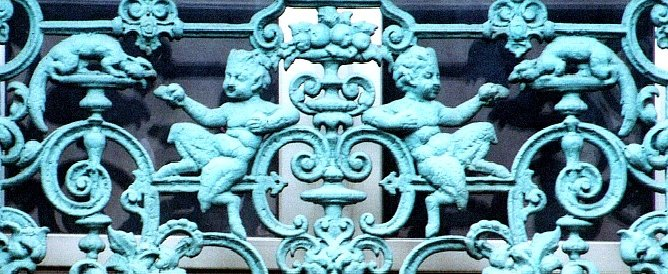
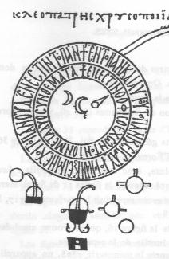
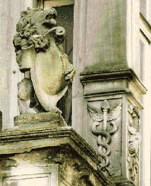
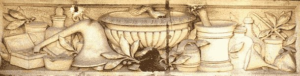
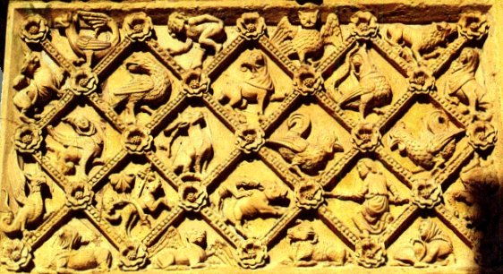
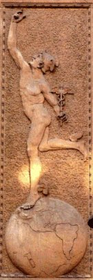
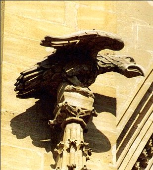
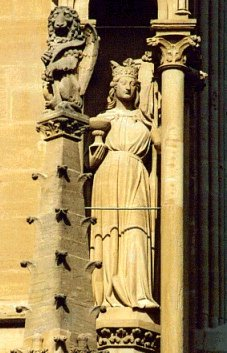
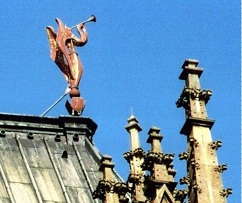
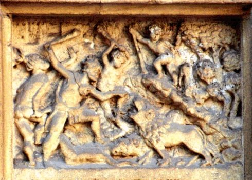

LES ENTRETIENS DU ROI CALID, ET DU PHILOSOPHE MORIEN alias
De compositione alchemiae, quem edidit Morienus Romanus Calid regi Aegyptiorum
Sur le magistère d’Hermès, rapporté par Galip, Esclave de ce Roi.
revu le 8 novembre 2004
Préambule Il s'agit d'un des plus anciens et des plus complets traités sur l'alchimie. En Occident, les plus anciens témoignages sur l'alchimie remontent à très peu près au XIIe siècle. En 1182, Robert de Chartres traduisit de l'arabe en latin l'Entretien du roi Calid et du philosophe Morien, rapporté par l'esclave Galip de ce roi. On estime que ce traité daterait de la fin du Ve siècle, sous le rapport que Calid , Prince d' Omayyad [Khalid ibn-Jazid ibn-Mu'Awiyah] aurait vécu de 635 à 704. On disait que Morien était un alchimiste romain du XIe siècle, ayant vécu en ermite dans les montagnes de Syrie, avant d'être mandé en Égypte par le sultan Calid voulant apprendre son secret. L'alchimie étant importée par les Arabes citant les Grecs, on fabriqua toutes sortes de faux pour envelopper d'exotisme les traités qui l'enseignaient. La Turba philosophorum (La Tourbe des philosophes), attribuée à Aristée, mettait dans la bouche de Pythagore ou de Démocrite des sentences sur l'alchimie. On fit plus : on inventa un alchimiste grec du XIe siècle, Artephius, dont on prétendit traduire l'ceuvre en latin sous le titre de Clavis majoris sapientiae, mais lorsque le manuscrit fut imprimé en 1612, Salmon reconnut :
« On y trouve des passages entiers qui sont mot à mot dans la version latine de Geber, et qu'il faut nécessairement que l'un ait pris à l'autre. » [Salmon, Bibliothèque des philosophes ch.ymiques, t. II (Paris, Charles Angot, 1708].
On mesure ainsi le peu de crédit dont sont entourés tous ces traités pseudépigraphes. Il faut ici nettement séparer d'ailleurs la matière même de ces ouvrages apocryphes de leurs auteurs chimériques. Ainsi, E. Chevreul, dans le cas d'Artephius, a-t-il été conduit à mettre sous la plume d'un auteru qui n'a jamais existé le Clavis Major Sapientiae, qui était auparavant attribué à Alphonse X le Sage [cf. Artephius]. Il est donc impossible, sous le prétexte qu'un auteur n'a pas existé, de barrer d'un trait les ouvrages qu'il n'a pas rédigés. Sinon, c'est la moitié, sinon plus, du corpus alchimique qu'il faudrait jeter sans autre forme de procès.
Morien, dit le Romain ou l'Ermite, semble avoir vécu vers le début du XIe siècle mais l'historien de la chimie, Ferdinand Hoefer, se demande s'il ne serait pas antérieur à Avicenne ; on peut d'autant plus se poser la question que les Entretiens de Morien au roi Calid, [Bibliothèque des philosophes chymiques, vol. II] sont cités par presque tous les auteurs. Quoi qu'il en soit, Morien est natif de Rome et devint le disciple d'Adfar, célèbre philosophe d'Alexandrie. A l'invitation du sultan Calid, il quitta sa retraite de Syrie pour se rendre en Egypte, dans l'intention d'expliquer les livres qu'Adfar avait laissés après sa mort et que personne n'était plus à même de comprendre. Il raconte sous forme d'une conversation une partie de son histoire, dans un traité aussi célèbre qu'introuvable : De compositione alchemiae, quem edidit Morienus Romanus Calid regi Aegyptiorum [livre traduit par Robert de Castres, 1182, in Bibl. chim., Manget, t. 1]. Morien mourut, dit-on, à un âge fort avancé, dans le voisinage de Jérusalem. Nous l'avons dit, Morien est abondamment cité par les alchimistes, comme Flamel :
« Si ce Feu n'est mesuré clibaniquement, dit Calid ; s'il est allumé avec l'épée, dit Pythagoras ; si tu enflâmes ton Vaisseau, dit Morienus et lui fais sentir l'ardeur du feu, il te donnera un soufflet, et brûlera ses fleurs. » [Fig. Hiér.]
ou Trévisan :
« C'est pourquoi, dit le Texte, alléguant Morien : Ceux qui croient composer notre bénite Pierre, sans cette première Partie, sont semblables à ceux qui veulent monter aux plus hauts Pinacles, sans échelle, lesquels avant que d'y arriver, tombent en bas en misères et en douleurs » [Verbum]
ou Arnauld de Villeneuve :
« Elle calcine et réduit en terre : elle transforme les corps en cendres, elle incinère, blanchit et nettoie, selon ce que dit Morien [les Entretiens du roi Calid à Morien] : « L'Azoth et le feu nettoient le Laiton, c'est-à-dire le lavent et lui enlèvent complétement sa noirceur. » [Semita semitae]
On trouve encore des références à Morien dans l'Entrée Ouverte au Palais Fermé du Roi, de Philalèthe :
« Mais moi qui connais l'opération pour l'avoir pratiquée avec soin, je sais à n'en pas douter qu'il n'est pas de travail plus ennuyeux que notre première préparation. C'est pourquoi Morien avertit sérieusement le roi Calid que beaucoup de sages se sont plaints de l'ennui que leur causait cette opération. Et je ne voudrais pas que cela fût pris métaphoriquement, car je ne considère les faits tels qu'ils apparaissent au commencement de l'oeuvre surnaturel, mais tels qu'on les rencontre dès l'abord. » [Introïtus, VIII]
Eugène Chevreul s'appuie assez souvent sur le nom de Morien dans sa critique de Cambriel ; Albert Le Grand y fait aussi allusion :
« Recueille la terre blanche et mets-la soigneusement de côté, car c'est un bien précieux, c'est ta Terre foliée blanche, Soufre blanc, Magnésie blanche, etc. Morien parle d'elle lorsqu'il dit : « Mettez pourrir cette terre avec son eau, pour qu'elle se purifie et avec l'aide de Dieu vous terminerez le Magistère. » [Composé]
Dans la Toyson d'or, Salomon Trismosin fait de nombreuses fois référence à Morien. La Tourbe des philosophes cite par contre peu Morien. Batsdorff, en revanche, évoque quatre fois Morien [Ariadne] :
« Morien dit qu'il y aura de grandes merveilles, qui est celui de la déalbation, auquel l'âme entrant dans son corps, le fixe et l'élève en une teinture permanente au blanc et au rouge ; savoir, au blanc dans son extérieur, et au rouge dans son caché...» [Filet d'Ariadne]
et notamment dans ce passage qui parle de l'infusion du Soufre rouge dans le Corps. Dans un traité resté anonyme, Huginus à Barma, on cite Morien trois fois :
« notre Eau croît sur les montagnes & dans les vallées [à propos de la graisse de terre, carbonate de chaux]. »
E. Canseliet, dans son Alchimie expliquée sur ses Textes classiques à propos de Pontanus dans le chapitre sur la Grande coction, p. 283, évoque Morien :
« Artephius et Jean Pontanus sont faciles à consulter [...] plus que Morien, en sa Disposition des sages -Dispositio Sapientum- d'où nous tirons l'indication de la parfaite identité qui lie le four avec le feu, lorsqu'ils sont dits philosophiques... »
et p. 273 :
« Si les anciens sages n'avaient pas trouvé la quantité du vase, dans lequel notre pierre soit mise, jamais ils ne seraient parvenus à la perfection de ce magistère. »
Le nom de Calid est inséparable de celui de Morien, d'après le titre de l'ouvrage sous lequel tous deux ont été liés. Calid, auquel les alchimistes donnent le titre de roi ou de souverain d'Egypte, passe pour le disciple de Morien. On lui attribue deux ouvrages, l'un intitulé Le Livre des secrets d'alchimie [Theatr. chim., vol VI et Biblioth. Manget, t. II] ; l'autre est le Livre des Trois paroles [Theatr. chem., vol V]. L'auteur des secrets d'alchimie parle à l'identique des autres philosophes, c'est-à-dire [dixit Hoefer] qu'il ne dit rien bien que prétendant déclarer ne rien vouloir cacher, excepté bien sûr, ce qu'il convient de ne point dire. il insiste sur les quatre opérations de l'art : la solution, la congélation, l'albification et la rubification. Voici ce qu'il dit de la pierre philosophale :
« La pierre philosophale réunit en elle toutes les couleurs. Elle est blanche, rouge, jaune, bleue, verte. De plus, elle renferme les quatre éléments ; car elle est liquide, aérienne, ignée et terrestre. La chaleur et la sécheresse constituent les propriétés cachées de cette pierre ; le froid et l'humidité en sont les propriétés manifestes. les premières sont une huile, les dernières une espèce de ferment qui corrompt les corps. »
Il y a là un rébus spirituel car, quand bien même la pierre philosophale existerait, elle ne pourrait pas posséder toutes ces qualités cardinales. Notre interprétation sera donc la suivante ; les couleurs cachent plusieurs mystères à la fois : d'abord les couleurs [vert, blanc, rouge] sont celles des vitriols. Le rouge et le blanc sont des valeurs de température [on dit par exemple de monter le feu au rouge sombre, rouge cerise, au blanc, etc.]. Le jaune est une couleur intermédiaire qui est celle des crépuscules [cf. humide radical métallique : Vesper et Lucifer]. Les quatre éléments traduisent les états de la matière à différentes époques de l'oeuvre, terrestre au début [prima materia], liquide [le Mercure], ignée [calcinations, état de l'Eau que les Adeptes décrivent comme un feu aqueux ou une eau ignée, bien traduite par la digamma du sceau de Salomon], aérienne [l'état du Mercure à la fin de l'oeuvre, esprits survenant dans les calcinations dont procèdent les séparations]. L'huile et le ferment sont vraisemblablement deux états du Mercure à des époques différentes. Le ferment qui corrompt les corps, par exemple, est l'expression de l'infusion du soufre rouge [Âme] dans le Soufre blanc [Corps] par quoi se signale l'incarnation de l'âme, c'est-à-dire sa fatale corruption. Nous sommes ici très près de l'hermétisme tel qu'en parle Festugière ou de certains concepts théologiques. C'est de la même façon qu'il faut voir pourquoi Calid appelle l'attention des Adeptes sur l'importance des signes astronomiques dans les opérations du Grand oeuvre :
« Beaucoup de gens se trompent et n'arrivent pas à bonne fin. Car, dans toute expérience, il faut observer la marche de la lune et celle du soleil. il faut savoir l'époque où le soleil entre dans le signe du Bélier, dans le signe du Lion, ou dans celui du Sagittaire ; car c'est d'après ces signes que s'accomplit le grand oeuvre. »
Sur cette importante partie, qui se rapporte aux relations du magistère aux planètes et aux étoiles fixes, nous avons défendues certaines idées au long des derniers chapitres de l'Atalanta fugiens où nous renvoyons le lecteur interessé. Les Entretiens de Calid et de Morien se révèle un traité assez abscond, au premier regard, où rapidement apparaissent des traits qui le démarquent comme un traité total sur l'Art sacré. Il se présente comme un ouvrage latin, fort singulier, qui est donné comme traduit de l'arabe ou de l'hébreu, dans un style allégorique. Parmi ces ouvrages il en est qui sont probablement les plus anciens de tous et par conséquent les plus voisins de la vieille tradition Tels sont les écrits attribués à Morienus ou Marianos, à Calid, [le cas spécial posé par Calid et Morien est tout à fait singulier. Chevreul a abordé la question dans ses travaux consacrés à Artéphius et à la critique - sic - des écrits de Cambriel -] Nous allons à présent laisser parler Marcelin Berthelot, qui a consacré un article spécial du Journal des Savants : SUR LES TRACES DES ÉCRITS ALCHIMIQUES GRECS conservés dans les traités latins du moyen âge et sur l'ouvrage intitulé Turba philosophorum. [août 1890]
Nous possèdons la date probable la plus reculée dans la traduction latine du Liber de compositione alchimiae, qui porte le nom de Morienus Romanus (Bibl. chem., t. I, p. 509), prétendu ermite, c'est-à-dire moine, de Jérusalem, qui l'aurait écrit pour Calid, roi d'Egypte : je reviendrai tout à l'heure sur ces noms propres. Le traducteur paraît un personnage sincère; il déclare son nom: Robertas Castrensis, nom que Jourdain, dans son Etude sur les traducteurs d'Aristote, identifie avec Robert de Rétines, traducteur connu d'arabe en latin de divers ouvrages philosophiques. Il est plein d'enthousiasme pour l'ouvrage qu'il traduit et croit que le sujet en a été inconnu jusque-là aux Latins : Quid sit alchymia, nondum cognovit vestra latinitas. Il déclare avoir traduit ce livre de l'arabe et terminé son travail en latin le 11 février 1182 (v. st.) (p. 519) : c'est la date la plus ancienne qui soit citée dans ce genre d'ouvrages, et je ne vois pas de raison pour la suspecter, du moins jusqu'à nouvel ordre. Le livre traduit par Robertus Castrensis porte, à tort ou à raison,le nom de Morienus, lequel paraît le même qu'un certain Marianos ou Murianos, moine chrétien grec ou plutôt syriaque, dont le disciple Calid mourut vers 704. Tous deux sont cités par les auteurs arabes (d'après Wustenfeld, Histoire des médecins arabes, et Hammer, Histoire de la littérature arabe). Cette dernière date correspond d'ailleurs à une indication du traité latin : Post quatuor annos a morte Hercalis régis eremita incedo (Bibl. chem., t. I, p. 512)Pour abscons qu'il paraisse de prime abord, comme nous l'avons dit, ce traité ne laisse pas de présenter des choses très surprenantes. Il cite des substances chimiques comme l'alun ou le borax, à mots couverts [tincar, pour atincar ou atinckar] ; il donne, peut-être pour la première fois la désignation exacte du mot AZOTH au Mercure. Il signale le fiel de verre comme un élément fondamental pour réaliser la conjonction des principes [cf. l'Art de la Verrerie, Loysel, II avec des extraits de Bosc d'Antic], le fiel de verre ou suin étant un mélange de sulfate de soude, de sulfate de potasse [en fait plutôt un polysulfure de potassium] et de sel marin. Ce fiel de verre joue un rôle important sur les chaux métalliques [les oxydes] dissous dans le verre. Le texte de Morien donne aussi des aperçus synthétiques sur les opérations qui se déroulent lors de la réincrudation du Soufre. Il s'agit toutefois d'un véritable traité hermétique, et qui, par certains côtés, peut se révéler trompeur qi l'on n'y prend garde. Il existe, en particulier, un passage où il est question de trois substances, voilées sous les espèces de « fumée blanche », de « lion vert » et « d'Amalgra » qui pourraient dérouter les étudiants qui ne sont pas assez imprégnés de culture hermétique. Enfin, Morien insiste sur l'Etheb d'or, concept flou et nébuleux où il voit une sorte de chaux d'or transmutée.« je suis devenu moine quatre ans après la mort d'Heraclius».
L'auteur se déclare chrétien. Il débute en rapportant l'origine de sa science à un livre alchimique composé par Hermès, roi d'Egypte. Cette affirmation rappelle certains passages de Zosime (Orig. de l'alch., p. 9) et d'Olympiodore (Collect. des alch. grecs, trad., p. 87) sur le livre de la Chimie, révélé aux mortels, et elle se trouve reproduite dans une forme analogue par Calid, par Theoctonicos ou Albert le Grand (Introduct. à la chimie des Anciens, p. 209) et, à leur suite, par Pic de la Mirandole. [1,2, 3, 4, 5, 6, 7, ]
«Ce livre, ajoute Morienus, a été retrouvé par Adfar d'Alexandrie, »
nom défiguré que je cite seulement à cause de celui de la ville. Morienus apporte à l'appui de ses assertions les dires des philosophes, testimonia antiquorum, tels que Hercules, rex sapiens et philosophius, désignation qui s'applique, d'après divers textes congénères, à l'empereur Heraclius, protecteur de Stephanus et des alchimistes, sous le nom duquel on avait même mis des ouvrages d'alchimie, aujourd'hui perdus (Introduct. à la chimie des Anciens, p. 176). Morienus le cite trois ou quatre fois. Dans d'autres traités alchimiques (Allegoriae sapientium supra librum Turbae - Bibl. chem., t. I, p. 472) latins, le nom d'Heraclius est associé, comme dans l'histoire, à celui de Stephanus d'Alexandrie. Les noms de Marie, d'Africanus (Arsicanus) et peut-être de Zosime (Oziambe, écrit aussi Azinabam ?) figurent plus loin. Une autre citation de noms gréco-orientaux est celle de Datin s'adressant à Eutychès, citation répétée à plusieurs reprises (p. 514-515). Or le nom d'Eutychès se rapporte à la Syrie : c'était celui d'un célèbre hérétique du Ve siècle, auquel se rattachait la tradition des Syriens jacobites. On peut aussi rappeler Eutychius, patriarche melchite d'Alexandrie, historien et médecin, qui a vécu à la fin du IXe et au commencement du Xe siècle, ainsi que divers autres homonymes. La phrase suivante, qui fait allusion à la fois au rôle alchimique et au rôle théologique de Marie, conformément à certains textes gnostiques et byzantins (Orig. de l'alch., p. 173), appartient au même ordre de rapprochements (p. 515) :
«Les philosophes, étant réunis en présence de Marie, lui dirent: Tu es heureuse, Marie, parce que le divin secret t'a été révélé. »
Tout ceci nous ramène donc à ce milieu gréco-syriaque dans lequel les sciences antiques ont subi une première élaboration, avant d'être transmises aux Arabes. Les autres noms cités par Morienus, tels que Herizartem et Adarmath, sont trop défigurés par la double transcription en arabe et en latin pour que l'on puisse essayer de les identifier. Aucune phrase d'ailleurs ne paraît traduite exactement des auteurs que nous connaissons ; mais plusieurs relèvent de la tradition constante des alchimistes, telle que celle relative à la multiplicité et à la diversité des noms donnés aux mêmes choses par les anciens sages, afin de mettre en défaut les non-initiés et de leur faire faire fausse route. Or la même assertion figure déjà dans les papyrus de Leyde (Introduct. à l'étude de la chimie des Anciens, p. 10) et dans Olympiodore (Collect. des alch. grecs, trad., p. 88), et elle est reproduite par le Pseudo-Démocrite (Collect. des alch. grecs, trad., p. 83) et par les auteurs qui l'ont suivi. Les indications des quatre éléments : le chaud et le froid, le sec et l'humide, répondant au feu, à l'eau, à la terre et à l'air, sont aussi trop vagues et trop répandues dans les traditions médicales et alchimiquespour constituer des filiations précises. Je noterai seulement la comparaison de la matière première des corps avec l'étoffe au moyen de laquelle le tailleur fabrique le corps, les manches, le giron et les différentes parties d'un habit et dont il tire même les fils destinés à joindre ces parties (p. 514).[cela rappelle ce que dit Fulcanelli, au sujet de la toile d'araignée, « Arachne » qui n'est pas sans rapport avec le labyrinthe de Salomon -] Elle rappelle, avec une variante nouvelle et non signalée jusqu'ici chez les Grecs, à ma connaissance, les textes du Timée (Orig. de l'alch., p. 264) etd'Enée de Gaza (Ibid., p. 74). On trouve la même comparaison dans le livre de senior Zadith, (Bibl. chem., II, 228) relatifs à la matière première, ainsi que ceux de Synesius (Ibid., p. 272. Collect. des alch. grecs, trad., p. 67) et de Stephanus sur le mercure des philosophes. Relevons encore l'axiome d'Hermès cité par Morienus : Omnia ex uno procedant (p. 513), pareil à celui du Pœmander, en to pan, et à ceux qui sont retracés entre les anneaux circulaires du serpent mystique des alchimistes. De même cet autre énoncé (p. 515) :
ÄQuo modo id quod est inferius, superius ascendit, et qua ratione quod est superius inferius descendit et qualiter unum eorum aiteri conjungitur, ita quod ad invicem misceantur.
On reconnaît l'axiome des alchimistes grecs :
« En haut les choses célestes , en bas les choses terrestres ; par le mâle et la femelle l'œuvre est accomplie, »
lequel accompagne dans les manuscrits grecs les figures des appareils distillatoires (Introd. à la chimie des Anciens, pl. I, p. 64 ; p. 133-136 ; p. 161). De même ce dire d'Hermès (p. 514):
« D'abord vient la couleur noire, puis, au moyen du sel tiré du natron, la couleur blanche, etc., » [succession des couleurs conformes aux textes classiques. On ne voit pas la place d'une transmutation dans un tel cadre...]
lequel répond aux énoncés des Grecs et de Stephanus (Orig. de l'alch., p. 277). Tout cela atteste une tradition qui se poursuit et une filiation directe ou détournée. Ces axiomes ont passé ensuite aux alchimistes latins, qui ne cessèrent de les invoquer. L'ouvrage de Morienus, dont je viens de les extraire, est un dialogue entre le moine chrétien et Calid, prétendu roi d'Egypte; ce qui nous amène à examiner les ouvrages latins qui sont donnés comme traduits de ce même Calid. A priori on serait porté à regarder le titre de roi d'Egypte comme chimérique, de même que ceux de roi des Perses ou roi de l'Inde, attribués à Geber, ou bien encore celui de roi d'Arménie que certains manuscrits grecs assignent à l'alchimiste égyptien Pétésis (ou Petesius), en tête de l'ouvrage d'Olympiodore. Les alchimistes, en effet, avaient coutume de supposer à leurs prédécesseurs de semblables titres, qu'ils croyaient devoir augmenter leur autorité. Cependant ce Calid paraît être un personnage historique, mort en 704. Il est donné par les orientalistes [Wustenfeld, Histoire des médecins arabes (en allemand), p. 9 ; Hammer, Hist. de la littérature arabe ( en allemand)., I Abtheil, Bd. II, p. 185 ; Ibn Khallikan, traduit de l'arabe en anglais par de Slane, t. I, p. 481 ; Leclerc, Hist. de la médecine arabe, t. I, p. 63] pour un prince égyptien, devenu savant après diverses aventures, et le premier introducteur, parmi les musulmans, des ouvrages scientifiques, astronomiques, médicaux et alchimiques. Son nom exact est Abu Haschim Chalid ben lezid ben Moawia al Ommawi, de la tribu des Koreischistes : il est signalé comme disciple de Marianos, ou condisciple de Geber. Les attributions de ces ouvrages scientifiques au prince égyptien sont-elles plus fondées que celles des livres grecs attribués à Heraclius et à Justinien (second, probablement) ? Les souverains orientaux de cette époque étaient grands fauteurs d'astrologie et d'alchimie, en même temps que de médecine et de sciences mathématiques; le tout étant regardé comme du même ordre, comme également utile, et mis sur le même plan. En tout cas les ouvrages alchimiques qui portent de tels noms doivent avoir été écrits, au moins sous leur première forme, à une époque où ces noms avaient quelque autorité, c'est-à-dire à une époque voisine, en général, de celle de l'existence de personnages qui ne tardaient guère à tomber dans l'oubli.
En fait nous possédons sous le nom de Calid deux ouvrages alchimiques latins, donnés comme traduits de l'arabe : le Liber trium verborum (Bibl. chem., t. II, p. 189. Dans la Collection Auriferae artis, etc. - Bâle, 1572 -), le Liber trium verborum offre des variantes considérables ; il y est question notamment des philosophes persans qui ont disparu dans la Bibl. chem. (Cf. Coll. des alch. grecs, trad., p. 61) et le Liber secretorum artis... Calid filii Iaici, ex hebraeo in arabicum et ex arabico in latinum versus incerto interprete (Bibl. chem., t. II, p. 183 ; dans le Theatrum chemicum, t. IV, p. 209, figure le même traité sous le titre : Liber secretum alchimiae Regis Calid filii Iarichi, etc.). Il est probable que ces ouvrages sont réellement traduits de l'arabe. En effet, on lit dans Ibn Khallikan que Calid exposa sa doctrine dans trois lettres, dont l'une contient la relation de ce qui s'est passé entre lui et son maître Marianos, et les autres, la manière dont il a appris la science, ainsi que les allusions énigmatiques du maître. L'indication des trois lettres rappelle le titre : Liber trium verborum; mais le contenu de la première répondrait plutôt à l'ouvrage mis sous le nom de Morienus. Les énigmes dont il est fait ici mention étaient sans doute analogues à celles qui figurent à la suite de la Turba. En tout cas, il s'agit de traités arabes similaires ou identiques avec ceux que nous possédons en latin. Mais, à part le nom d'Euclide, cité (p. 184) pour un énoncé géométrique, et celui d'un philosophe grec, Bausan (Pauseris ?), les énoncés contenus dans ces opuscules sont trop vagues pour permettre aucun rapprochement précis en vue de la recherche que je poursuis actuellement : c'est une difficulté que l'on rencontre continuellement dans l'examen de ce genre de littérature.Notes complémentaires :
1)- Lee Stavenhagen a travaillé sur les Entretiens. Il est notamment l'auteur de : A Testament Of Alchemy, [University of New England Press, Hanover. New Hampshire, 1974] dans lequel on trouve Being the revelations of Morienus to Khalid ibn Yazid et de : The original text of the latin Morienus, Ambix, 17 (1970), 1-12.
2)- Karen-Claire Voss est l'auteur d'un article, "Spiritual Alchemy from the Middle Ages through the Renaissance : Interpreting Representative Texts and Images" dont nous extrayons ceci sur Morien et Calid :
The Revelations of Morienus to Khalid ibn Yazid3)- on peut trouver à la Bibliothèque Nationale de France :The first alchemical work to appear in the West was a treatise attributed to Hermes Trismegistus by Robertus Castrenis who translated it from Arabic into Latin in 1182. It was later published in Paris, in 1559, under the title: "Booklet of Morienus Romanus, of old the Hermit of Jerusalem, on the Transfiguration of the Metals and the Whole of the Ancient Philosophers' Occult Arts, Never Before Published." [31]
The story concerns Khalid, a king who had looked for many years for a man described as "Morienus the Greek, who lived as a recluse in the mountains of Jerusalem," because he wanted to find out from him the secret of the "Great Work." The king had occasion to travel to another town where a man came to him and told him that he made his home in the mountains of Jerusalem and knew a wise man, a recluse, who possessed the knowledge that the king was looking for. After warning the man about the punishment he could expect if it turned out that he was lying, the king gave him many gifts and arranged for him to lead an expedition to search for the wise man. Ghalib, the narrator of this text, tells us that he accompanied the expedition, and that they succeeded in finding the wise man. “He was tall of stature, though aged, and although lean, so noble of countenance and visage that he was a marvel to behold. Yet he wore a hair shirt, the marks of which were borne on his skin." [32]
They convinced him to accompany them to the court for an audience with the king. When the king asked the man his name the answer came: "I am called Morienus the Greek." [33] The king asked how long he had lived in the mountains and learned that Morienus had been there for over one hundred and fifty years. Well pleased with this stranger, the king gave Morienus his own quarters and began to visit him twice every day. They spoke of many things, and grew very close. Finally, one day the king asked Morienus to tell him about the Great Work. Seeing that the king was worthy of this, Morienus told him that he had achieved initiation, and agreed to instruct him. [34] Morienus said that nothing can be achieved if it is counter to divine will. He spoke of how God "chose to select certain ones to seek after the knowledge he had established," and how over time this knowledge was lost, save for what remained in a very few books which were difficult to understand, since the "ancients" [35] sought to preserve the secrets "in order to confute fools in their evil intentions." Because this knowledge was "disguised", anyone seeking to "learn it must understand their maxims." Morienus began to emphasize that the Work is but a single thing.
"Now in answer to your question as to whether this operation has one root or many, know that it has but one, and but one matter and one substance of which and with which alone it is done, nor is anything added to it or subtracted from it." [36]
Numerous authorities, including Hermes, Moses, Maria, and Zosimos, are cited throughout by Morienus to legitimate what he says, and the lesson concerning oneness is continuously reiterated: There is but one stage and one path necessary for its mastery. Although all the authorities used different names and maxims, they meant to refer to but one thing, one path and one stage. [37] The method to be followed is in imitation of Nature, and like Nature, is characterized by process causality:
"For the conduct of this operation, you must have pairing, production of offspring, pregnancy, birth, and rearing . . . the performance of this composition is likened to the generation of man, whom the great Creator most high made not after the manner in which a house is constructed nor as anything else which is built by the hand of man. For a house is built by setting one object upon another, but man is not made of objects." [38]
Morienus then proceeded to instruct the king about the details of the substances to choose, the proportions, how to mix them, when to heat them and for how long, always invoking the idea that God's help is needed. He insisted on the need for personal experience, and told the king that before he would continue with his explanations, he would bring before you the things called by these names, that you may see them, as well as work with them in your presence. . . one who has seen this operation performed, is not as one who has sought for it only through books . . . [39] Finally, he says, that "there is no strength nor help except by the will of great God most high," and the narrator writes: "Here ends the book of Morienus, as it is called. Thanks be to God." [40]This treatise is a paradigmatic case of the way in which validity and the authority of experience are bound up with each other in the alchemical tradition. Initially, Morienus is able to win the trust of the king solely on the basis of the answers he gave to questions concerning his personal experience during his first audience with the king. Later, Morienus tells the king that before he proceeds with instruction, he will perform various steps while he is watching, "so that you may see them", since "one who has seen this operation performed, is not as one who has sought for it only through books." [41]
Notes :
[31] Morieni Romani, Quondam Eremitae Hierosolymitani, de transfiguratione metallorum, & occulta, summaque antiquorum Philosophorum medicina, Libellus, nusquam hactenus in lucem editus. Paris, apud Gulielmum Guillard, in via Iacobaea, sub diuae Barbarae signo. 1559; Paris: Gulielmum Guillard, 1559. I have used the edition by Leo Stavenhagen, op. cit. According to Stavenhagen, Castrenis was really Robert of Ketton, an Englishman who was commissioned by the Abbot of Cluny to translate the Koran into Latin in 1143, but in fact, Robert's authorship is doubtful. The evidence on which Stavenhagen bases his hypothesis is complicated, but his conclusion is that, when considered as a whole, the printed version that first appeared in Paris in 1559 was not "a genuine early document of Western alchemy." (Stavenhagen, op. cit.., p. 53) It was "not until the 15th century [that] Robertus Castrensis, Morienus, Hermes, and Khalid . . . all put together to form the story that was then printed a hundred years later." (Stavenhagen, ibid., p. 59). Cf. Faivre Accés, op. cit.., p. 90.
[32] Stavenhagen, op. cit., p. 55.
[33] Ibid., p. 5.
[34] Ibid., p. 9.
[35] Ibid., p. 11.
[36] Ibid., p. 13.
[37] Ibid., p. 19.
[38] Ibid., p. 29.
[39] Ibid., p. 39.
[40] Ibid., p. 47.
[41] It occurs to me that the relatively recent devaluation of experience and the simultaneous valorization of "objective" appraisal (in the sense that it is an intellectual judgment which is arrived at purely on the basis of "facts" divorced from experience) is a phenomenon analogous with symbolic reversal.- 17. Morienus. Liber ad Regem Khalid. [París, Bibliothèque Nationale MS. 6514.
Folio. Siglo XIV.] ;
- 27. Morienus. Dialogus cum Rege Calid, sice potius Calid, de lapide Philosophorum. [París, Bibliothèque Nationale MS. 7156. Folio. Siglo XIV. ] ;
- 7. Morienus. Dialogus cum Rege Calid, de lapide Philosphorum. [París, Bibliothèque Nationale MS. 7158. Folio. Siglo XV.]4)- liste de sites internet relatifs aux Entretiens de Morien et Calid
http://www.levity.com/alchemy/caezza2.html
http://www.yankeeclassic.com/miskatonic/libscien/alchebks.htm
http://www.triad-publishing.com/stone17b.html
http://www.ucm.es/info/folchia/sest.htm
http://www.istanbul-yes-istanbul.co.uk/alchemy/Spiritual%20Alchemy.htm
http://personal5.iddeo.es/emclmffgm/medicina.htm
http://www.open.ac.uk/Arts/HST/SHAC/ambix/reviews71-80.pdf
http://new-library.com/zoller/features/rz-article-hermetica.shtml
http://www.hyle.org/journal/issues/4/karpenk.htm
http://www.new-library.com/zoller/library/nuntius/rz-nuntius0799.shtml
http://www.levity.com/alchemy/almss30.html
http://www.angelfire.com/nt/dragon9/HISTORY.html
http://www.triplov.com/alquimias/pilar/pilar.htm
http://members.tripod.com/~CrucibleDesign/qabal.html
http://assets.cambridge.org/0521631858/sample/0521631858WSC00.pdf
http://orbita.starmedia.com/~megagnose/alquimistas.html
http://home.pacbell.net/freeron/gaddis/I3anno3.htm
http://home.planet.nl/~amorc.nl/artik09.html
http://www.terravista.pt/Guincho/7933/pilar.htm
http://www.amorc.es/rosacru.html
http://www.geocities.co.jp/Technopolis/9866/shinkan01.html
http://www.jadu.de/mittelalter/magie/araber.html
http://www.wlu.edu/~lubint/touchstone/Rel195Biblio.htm
http://www.geocities.com/roggemansmarcel/bronnen.htm
http://www.rnac.ne.jp/~amorc/history.htm
http://74.1911encyclopedia.org/A/AL/ALCHEMY.htm
http://www.angelfire.com/nt/dragon9/MANUSCRIPTS.html
http://perso.club-internet.fr/thoth333/htm/alchimieauteurs.htm
http://www.ku.dk/folke/foraar2002.pdf
http://alchemy.first-net.cz/almss5.html
http://web.mit.edu/afs/athena.mit.edu/dept/libdata/lso/b/dibnerArchive/ftp/marc.980914/d980903
http://www.mtsn.org.uk/staff/staffpages/cer/tempest/supernatural.htm
http://grokhovs2.chat.ru/chem/chem5.html
¯
Nous allons à présent donner le texte, agrémenté de commentaires originaux et de figures que nous devons à M. Alain Mauranne [provenant de la Cathédrale de Metz, pour la plupart] à qui nous exprimons notre amitié et notre gratitude.
Le Roi Calid ayant reconnu et fait approcher l’homme de Dieu, que nous lui avions amené des Déserts de la Judée, où par son ordre nous étions allez le chercher, il le fit seoir auprès de lui, et il lui parla ainsi. Vénérable Vieillard, je vous prie de me dire comment vous avez nom, et qu’elle est votre profession, car je ne vous le demandais point la première fois que vous vintes ici, parce que je me méfiais de vous, ne vous croyant pas tel que vous êtes. A quoi Morien répondit : Je m'appelle Morien ; je fais profession du Christianisme, et mon habit et ma manière de vivre sont assez voir que je suis Ermite. Combien y a t'il, dit le Roi, que vous êtes Ermite ? Je le suis, répondit Morien, depuis quatre ans après la mort du Roi Hercules.Le Roi fut fort satisfait de la prudence, de l'humilité, de la douceur et de la modestie de cet homme. Car ce n’était pas un grand parleur, ni un suffisant ; mais une personne humble, sage et affable, comme un Homme de sa profession devrait l'être.
Le Roi lui dit donc. O Morien, ne feriez-vous pas mieux d'être dans quelque Monastère avec les Religieux qui y vivent en Communauté, à louer et à prier, Dieu avec eux dans L'Eglise, que de vivre tout seul dans les Déserts et dans la Solitude ?
O Roi, répondit Morien, tout le bien que j'ai me vient de Dieu, et j'attends de lui seul celui que j'espère à l'avenir ; qu’il fasse de moi ce qu'il lui plaira. Je ne doute point que je ne fusse beaucoup plus en repos dans un Monastère, que dans la solitude et parmi les rochers, ou je n'ai que de la peine ; mais personne ne recueille, s'il ne sème, et on ne peut recueillir que ce que l'on aura semé. C'est pourquoi j’espère que Dieu, par sa bonté infinie, ne me délaissera pas dans cette vie mondaine. Car la porte pour aller au véritable repos est fort étroite, et personne n’y saurait entrer que par l'affliction et par les mortifications. Tout ce que vous dites est assurément très vrai, dit alors le Roi ; mais parce que c'est un Chrétien qui le dit, cela nous parait faux. Or ce qui obligeait le Roi à parler ainsi, c'est que pour lors il était Payen, et qu'il adorait encore les Idoles. Morien lui répondit. Si ce que je dis est véritable, comme vous l'avouez, il faut que vous demeuriez d'accord, que mes paroles ne peuvent provenir que d'un Esprit véritable. Car les Choses vraies viennent de ce qui est vrai ; comme les fausses ne procèdent que de ce qui est faux ; les éternelles de ce qui est éternel ; les passagères, de ce qui est passager ; les bonnes de ce qui est bon ; et les mauvaises, de ce qui est mauvais.
Le Roi prenant lors la parole dit. O Morien, on m'avait déjà dit beaucoup de choses avantageuses de votre personne, de votre fermeté, et de votre foi. Je vois présentement que tout ce qu'on m’en a dit est véritable, et je vous avoue que j'en suis ravi, et que je vous regarde avec admiration. Aussi est-ce ce qui ma tant fait souhaiter le bien de vous revoir, et de conférer avec vous. Car outre le sujet, dont nous avons à nous entretenir, je désire que vous m’instruisiez, et que vous m’appreniez d'autres choses.Morien lui répliqua. O Roi, je prie Dieu, qui est tout puissant, qu'il vous retire de l’erreur où vous êtes, et qu'il vous fasse connaître la vérité. Pour ce qui est de moi, je n'ai rien qui doive vous donner de l'admiration. Je suis un des Enfants d'Adam, comme le sont tous les autres Hommes. Nous sommes tous venus d'une même origine, et nous n’aurons tous qu’un même terme ; quoi que nous devions arriver par des voies différentes. La longueur des années change l'Homme, parce qu'il est sujet au temps, et elle le confond. Pour ce qui est de moi, je ne suis pas si chan-gé, que plusieurs, qui sont venus après moi, ne le doivent être davantage quand ils seront à mon âge. Après le dernier changement vient la mort, qui n'épargne personne, que l'on croit être la plus grande de toutes les peines. Car, et devant que l’Ame se joigne au Corps, et après leur dissolution ou séparation, elle a à souffrir une peine plus cruelle, que n'est quelque mort que ce soit [allusion à la sublimation du Soufre dans le Mercure]. Mais je prie le Créateur tout puissant qu'il soit toujours à notre secours.
Il semble par les choses que vous venez de dire, dit alors le Roi, que vous vous imaginiez que je veuille me moquer de vous. Et si vous aviez cette opinion de moi, tout vieillard et tout sage que vous soyez, vous mériteriez plutôt que l'on se moqua de vous, que non pas que l'on vous louât.Après cela le Roi m’appela et me dit : Gali, mon fidèle Serviteur va chercher une maison pour cet Homme, qui soit fort belle dedans et dehors, qui soit bien meublée et proche de mon palais. Trouve lui aussi quelqu'un de sa religion qui soit savant, âgé et honnête Homme, afin qu'il se console dans sa conversation, et qu'il n’ait pas sujet de s'ennuyer [c'est-à-dire de trouver le milieu ou moyen par lequel le Soufre soit sublimé. Il s'agit d'un récit de cabale où Morien est considéré comme le principe Soufre]. Car il me parait effrayé, et il semble qu'il n’ait pas tout à fait confiance en moi. Je fis ce que le Roi m’avait ordonné. Le Roi visitait Morien tous les jours, et il demeurait quelques heures à s'entretenir avec lui, afin de le rassurer ; et pour cet effet, il ne lui parlait point du tout de son Magistère. Mais étant enfin devenus fort familier l'un avec l'autre, et ayant fait grande amitié ensemble, Morien se découvrit au Roi, et et se confia à lui. Le Roi lui faisait des questions sur les Lois des Romains, et si elles avaient été changées selon la diversité des temps. Il lui demandait comment les premiers Rois, et les consuls s’étaient comportés dans leurs gouvernements ; et il l’interrogeait aussi sur l’histoire des Grecs. Morien lui répondait fort civilement à toutes ses demandes. Ce qui fit que le Roi prit Morien en si grande affection, qu'il n'avait jamais tant considéré ni aimé personne que lui. Un jour donc qu’ils s’entretenaient, selon leur coutume, le Roi commença de lui parler ainsi.
Très sage Vieillard, il y a longtemps que je cherche le Magistère d’Hermès. Je l’ai demandé à plusieurs, mais je n’ai encore trouvé personne qui ait pu m'en dire la vérité. C'est ce qui fit qu'après que vous fûtes parti de ce pays à mon insu, et que j'eus lu ces paroles, que vous aviez écrites autour du vaisseau où était le Magistère, que vous aviez fait, Ceux qui ont en eux-mêmes tout ce qu'il leur faut, n'ont nullement besoin du secours de qui que ce soit. Et après avoir connu ce que ces paroles voulaient dire, je fis mourir tous ceux que j’avais tenu plusieurs années auprès de moi, pour travailler à cette Oeuvre, parce qu'ils s'étaient vantés faussement de la savoir faire. Dites-moi donc, je vous prie, ce que c'est véritablement que ce Magistère, et qu'elle est sa substance et sa composition, afin que je reçoive de vous la satisfaction que je cherche depuis si longtemps. Et si vous le faites, je vous déclare que je serais entièrement à vous avec tout ce que je possède ; jusque-là même, que je vous promets de m'en aller avec vous dans votre pays, si vous le souhaitez. N'ayez donc plus, s'il vous plait, de mauvais soupçons de moi, comme il semble que vous en ayez eu autrefois, et n'appréhendez point que je vous fasse aucune violence ni aucun déplaisir.
O bon et sage Roi, dit Morien, je prie Dieu qu'il vous fasse la grâce de vous reconnaître. Je vois bien maintenant que ce qui vous a obligé de m'envoyer chercher, ça a été parce que vous aviez grand besoin de moi. Pour moi j’ai été bien aise de vous venir trouver, tant pour vous enseigner le Magistère, que pour vous faire voir manifestement combien la puissance de Dieu est admirable. Au reste je n'appréhende rien et je n'ai nulle méfiance de vous ; parce que dès que quelqu'un craint, c'est une marque qu'il n'est pas bien assuré de la vérité. D'ailleurs un homme sage ne doit rien craindre, parce que si il craignait, il pourrait bientôt désespérer de réussir, et par ainsi il serait dans le doute et dans l'incertitude ; et par conséquent il ne ferait jamais rien. Et comme vous me témoignez beaucoup d'affection, et que je vois que vous êtes ferme en vos résolutions, et sévère, mais pourtant bon et patient, je ne veux pas vous cacher plus longtemps la connaissance du Magistère. Vous voilà donc arrivé sans peine, et plus aisément que personne, à ce que vous aviez tant souhaité ; le nom de Dieu en soit béni à jamais.
Je vois maintenant, dit le Roi, que celui à qui Dieu ne donne pas la patience, s'égare facilement pour vouloir se trop hâter [la patience est un terme de cabale très souvent utilisé : voyez les sections en recherche -] ; qu'il tombe dans une horrible confusion, et que la précipitation ne vient que du Diable. Et quoi je sois petit fils de Machoya, et fils de Géfid, qui ont été Rois, je vois bien que toutes les grandeurs de la Terre ne servent de rien pour cette Œuvre, et qu'il n’y a de force ni de puissance pour y parvenir, que celle qui vient de Dieu très haut et très puissant.Morien répondit. O bon Roi, je prie Dieu qu'il vous convertisse, et qu'il vous rende meilleur. Appliquez vous mainte nant à considérer et à examiner ce Magistère, et soyez sûr que vous le saurez, et le comprendrez facilement. Mais souvenez vous bien surtout de bien étudier le commencement et la fin. Car par ce moyen, avec l'aide de Dieu, vous découvrirez plus facilement tout ce qui est nécessaire pour le faire. Or je vous avertis que ce Magistère, que vous avez tant cherché, ne se découvre ni par violence, ni par menaces ; que ce n'est point en se fâchant que l'on en vient à bout ; et qu'il n'y a que ceux qui sont patients et humbles, et qui aiment Dieu sincèrement et parfaitement, qui puissent prétendre de l’acquérir [il y a là une indication sur des matières soufrées, comme nous l'avons dit très souvent, à cause d'une assonance entre qeion et qeioV]. Car Dieu ne révèle cette

FIGURE I
(les anges donnent le Lait de Vierge aux dragons - Metz - cliché alain Mauranne)divine et pure Science qu'à ses fidèles Serviteurs, et qu'à ceux à qui de toute éternité il a résolu, par sa divine providence, de découvrir un si grand Mystère. Ainsi ceux, à qui il fait une grâce si singulière, doivent bien considérer à qui ils peuvent confier un si grand Secret, avant que de le dire, et de se découvrir ; parce qu’on ne le doit considérer que comme un Don de Dieu, qu'il fait comme il lui plaît, et à qui il lui plaît de ceux qu'il choisit parmi ses fidèles serviteurs. Et ils doivent continuellement s'abaisser et s'humilier devant Dieu ; reconnaître avec une entière soumission, qu’ils ne tiennent un si grand bien que de lui seul, et n'en user que selon les ordres de sa sainte volonté.
Je sais, dit alors Calid, et je connais bien que rien d’excellent et de parfait ne se peu faire, sans l’aide et sans la révélation de Dieu ; car il est infiniment élevé au dessus de toutes les Créatures, et les Décrets de sa sainte volonté sont immuables. Le Roi se tournant lors vers moi, me dit. Galip, mon fidèle Serviteur, assied-toi, et écris fidèlement tout ce que tu nous entendras dire. Et Morien prenant la parole, dit.Le Seigneur tout puissant et Créateur de toutes choses a crée les Rois avec une puissance absolue sur leurs Sujets ; mais il n'est pas en leur pouvoir de changer l'ordre qu’il a établi dans le Monde. Je veux dire, qu’ils ne peuvent point faire que les choses qu’il a mises les premières, deviennent les dernières ; ni ce qu’il a mis le dernier soit le premier ; et il leur est tout à fait impossible de rien savoir, s’il ne leur révèle, et de rien découvrir, s'il ne le leur permet, et qu'il ne l’ait auparavant résolu. Comme ils ne sauraient non plus garder ni conserver ce qu'il leur aura donné, si ce n’est par la force et la vertu extraordinaire qu’il leur envoie d’en haut. Et ce qui fait paraître Dieu encore plus admirable, ils ne sauraient, avec toute leur puissance, retenir leur âme, ni conserver, leur vie, que jusqu’au terme que Dieu leur a limité. Et c'est Dieu tout seul qui choisit, parmi ses serviteurs, ceux qu’il lui plaît, et qu'il destine à chercher cette science divine, qui est inconnue et cachée aux hommes, et pour la garder et la tenir secrète dans leurs cœurs, lorsqu'ils l’auront une fois découverte. Aussi est ce une science admirable, laquelle détache et retire celui qui la possède de la misère de ce Monde, et qui le conduit et l’élève à la connaissance, des biens de la vie éternelle. C'est pourquoi les anciens Philosophes en étaient si jaloux, qu'en mourant, ils se laissaient cette Philosophie les uns aux autres, par tradition, comme un héritage qui n'appartenait qu'à eux seuls. Ensuite un temps fut que cette science était presque anéantie, étant méprisée de tout le monde. Et quoi que parmi tout ce mépris que l’on en faisait, il y eut plusieurs Livres des anciens philosophes, qui avoient été concernés, dans lesquels cette science se trouvait toute entière, et sans nul mensonge. Et quoi qu'il y en eut plusieurs qui s'appliquaient à l'étudier, personne néanmoins ne pouvait réussir à faire le Magistère, à cause de la pluralité des noms tous différents, que de tout temps les anciens Sages ont donné aux choses qui appartiennent à ce Magistère, et qu'il faut nécessairement connaître pour le pouvoir faire. Pour moi, j'en ai connu parfaitement la vérité ; ainsi que vous en avez vu l’expérience. Mais quoi que les philosophes, nos prédécesseurs, aient donné plusieurs et différents noms à leur Magistère, et quoi qu’ils y aient entremêlé des sophistications, afin de rendre la chose plus obscure, et sa connaissance plus difficile ; il est certain néanmoins que tout ce qu'ils en ont dit, est d'ailleurs très véritable ; comme plusieurs, qui ont fait le Magistère, l'ont vu par leur propre expérience. Et l'on a toujours crû qu'ils n’ont affecté cette obscurité et ce déguisement, que pour ôter la connaissance de leur science aux fous, et aux insensés, qui en abuseraient ; et afin qu'il n’y eût que ceux qui seront jugés dignes de posséder un si riche trésor ; qui puissent entendre leurs paroles. Que celui donc qui trouvera les livres des véritables philosophes, les étudie soigneusement, jusqu’à ce qu'il les entende de la véritable manière, de laquelle ils doivent être entendus. Car toutes ces difficultés ne doivent détourner personne de la recherche de ce Magistère ; et un homme ne doit point pour cela désespérer d'y parvenir, pourvu qu'il ait une ferme espérance et une entière confiance en Dieu. Qu'il le prie continuellement de lui donner l'intelligence de ce secret, et de lui faire la grâce de faire et d'accomplir une œuvre si divine et si admirable. Qu’il lui demande instamment sa lumière pour connaître cette admirable perfection, et pour l'éclairer et le conduire dans la droite et véritable voie, sans qu'il s'en écarte jamais, jusqu’à ce qu'il soit heureusement parvenu à la fin de l’œuvre.
O Morien, dit alors le Roi, s'en est assez, s'il vous plait, touchant la conduite qu'il faut tenir avant que de commencer cet ouvrage. J’entends fort bien ce que vous en venez de dire, et je vous promets que je l’observerais fort exactement, si vous voulez bien m’enseigner le Magistère. Expliquez-le moi donc, je vous prie, fort clairement, et faites-moi entendre ce qu'il y a si longtemps que je souhaite de savoir, afin que je ne sois point obligé à en faire une longue recherche, ni une étude pénible, qui pourrait me décourager et me détourner du bon chemin. Aussi entrons je vous prie en matière, par le commencement de la chose, et continuons de suite, sans rien confondre et sans renverser l'ordre qu'il faut observer.A cela Morien, répondit. Je vous déclarerais la chose de suite et d'ordre ; commencez à me demander ce qu'il vous plaira.
SECONDE ET PRINCIPALE partie de l’Entretien du Roi Calid et du Philosophe Morien, sur le Magistère d’Hermès.
CALID. Avant toutes choses, je vous prie de me dire ce que c’est que la principale substance et Matière du Magistère, et quelle elle est, et s’il est composé de plusieurs substances, ou s’il n'est fait que d’une seule matière.
MORIEN. Quand on ne peut pas faire connaître par son effet une chose de laquelle on doute, pour la prouver, on se sert du témoignage de plusieurs personnes, qui certifient qu’elle est véritable. Néanmoins je ne vous alléguerai point ici l’autorité des Anciens sur ce que vous me demandez, qu'auparavant je ne vous ai déclaré ce que plusieurs fois j'ai connu par mon expérience touchant la principale substance et matière du Magistère. Et si vous considérez bien ce que je vous dirai de moi même, et les autorités des anciens philosophes que je rapporterai, vous connaîtrez évidemment que nous parlons tous unanimement d'une même chose ; et que tout ce que nous disons est véritable.
Pour satisfaire donc à votre demande, sachez qu'il n’y a qu’une seule première et principale substance, qui est la matière du Magistère ; que de cette matière se fait Un ; que cet Un est fait avec elle et que l’on n'y ajoute ni n'en ôte quoi que ce soit. Voila la réponse à ce que vous m’avez demandé [il est évidemment impossible de comprendre quoi que ce soit à ce que dit Morien si l'on n'a pas, déjà, quelque teinture de science. Cet UN est le serpent Ouroboros de la tradition, celui qui figure sur la Chrysopée de Cléopâtre. C'est encore le EN TO PAN dont parle Canseliet en ses Deux Logis Alchimiques. En un mot, c'est le milieu ou moyen de Fulcanelli, l'artifice dont il faut user pour conjoindre les extrémités du vaisseau de nature]. Je vais maintenant vous alléguer le témoignage des anciens philosophes, pour vous faire voir que nous sommes

FIGURE II
(Chrysopée de Cléopâtre - in Introduction à la Chimie des Anciens, Berthelot)tous d'accord. Herculès qui était Roi, Sage et Philosophe, étant interrogé par quelques-uns de ses disciples, il leur dit : notre Magistère vient premièrement d’une racine, laquelle s’étend et se partage ensuite en plusieurs choses, et puis elle retourne encore en une seule chose [cette racine est ce que les Modernes ont appelé, depuis, l'humide radical métallique.]. Et je vous avertis qu’il sera nécessaire qu’elle reçoive l’air. Le philosophe Arsicanus [c'est-à-dire arsenicus, allusion à l'Arsenic de Geber], dit : Les quatre Eléments, c'est à dire, la Chaleur, le Froid, l’Humidité et la Sécheresse, viennent d'une seule source, et quelques-uns d’entre eux sont faits des autres, qui sont les mêmes [sur les Quatre Eléments et leurs rapports à l'alchimie, voyez l'Idée Alchimique V et le Résumé de l'Histoire de la Matière de Chevreul -]. Car de ces quatre, les uns sont comme les racines des autres, et les autres sont comme composez de ces Racines. Ceux qui sont les racines, ce sont l'Eau et le Feu [ces deux éléments désignent l'eau ignée ou le feu aqueux, épithètes du Mercure. Il est d'usage, cependant, de dire que le Mercure est formé d'EAU et d'AIR ; mais il s'agit alors du Mercure philosophique, c'est-à-dire animé ; au lieu que Morien veut parler ici du premier Mercure que constitue le « vinaigre très aigre » des philosophes -] ; et ceux qui en sont composés, c’est la Terre et l'Air [le TERRE renvoie au CORPS, c'est-à-dire à la Toyson de l'or ; l'AIR représente le Soufre sublimé dans le Mercure. Michel Maier en aprle comme de trois pierres qui volent dans les cieux ; cf. Atalanta, XXXVI]. Le même Arsicanus dit à Marie : Notre Eau a domination sur notre Terre, et elle est grande, lumineuse, et pure ; car la Terre est créée des parties et avec les parties de l’Eau les plus grossières, et les plus épaisses. Hermès [cf. Table d'Emeraude] dit pareillement : La Terre est la Mère des autres Eléments ; ils viennent tous de la Terre et il y retournent. Il dit encore : comme toutes choses viennent d’un, ainsi mon Magistère est fait d'une substance et d'une matière [cf. section Matière]. Et de même que dans le corps de l'homme sont contenus les quatre Eléments, Dieu les a aussi créés différents et séparés ; et il les a créés, unis et ramassés en un, étant répandus par tout le Corps ; parce qu’un même Corps les contient tous, comme s’ils étaient submergés en lui ; et il les retient tous en une seule chose. Et pourtant chacun d'eux fait une opération particulière, et toute différente de celles de chacun des autres. Et quoi qu’ils soient tous dans un même Corps, cela n'empêche pas que chacun d'eux n'ait sa couleur particulière, et chacun sa domination séparée. Il en est par conséquent tout de même de notre Magistère, parce que les couleurs, qui dépendent chacune d'un Elément, paraissent successivement, et l'une après l’autre. Les philosophes ont dit beaucoup d'autres choses semblables de ce Magistère comme nous verrons ci après [la Tradition veut qu'en effet, le NOIR corresponde à la TERRE, le BLANC à l'AIR et le ROUGE au FEU. L'EAU correspond à un état intermédiaire qui correspond à la période de dissolution, mais à l'époque où la conjonction des principes est réalisée. Cette époque se signale par les couleurs de la queue de paon, animal dédié à Héra - Junon].
CALID. Comment et quel moyen se peut-il faire, qu'il n'y ait qu'une racine, qu’une substance, et qu'une matière de ce Magistère, puisque dans les écrits des philosophes on trouve plusieurs noms de cette racine, et qui sont même tous différents ?
MORIEN. Il est vrai qu'il y a plusieurs noms de cette racine ; mais si vous considérez bien ce que je viens de dire, et dans l'ordre que je l'ai dit, vous trouverez qu'il n’y a effectivement qu'une racine, qu’une substance et qu'une matière du Magistère. Et afin de vous le faire mieux comprendre, je vais encore vous rapporter et vous expliquer quelques autres autorités des anciens Philosophes sur ce sujet.
CALID. Achevez de m'expliquer le Magistère de cet œuvre.
MORIEN. Herculès dit à quelques -uns de ses disciples : Le noyau de la datte est produit et nourri de la palme, et la palme de son noyau [le dattier et le palmier sont des arbres à haut pouvoir symbolique. Sur la datte, voyez : 1, 2, 3, 4, 5, 6, . Sur le palmier, voyez : 1, 2, 3, 4, 5, 6, 7 - L'allégorie est exactement la même que celle de Basile Valentin, quand il dit de façon lapidaire : « brûle tes livres et blanchit le laiton », ce que l'on peut traduire par « rompt l'écorce et prend le noyau ». C'est la phase de blanchiment qui correspond aux laveures ignées de Flamel]. Et de la racine de la palme, proviennent plusieurs petits

FIGURE III
(l'amande mystique - lion et Mercure - Metz, cliché Alain Mauranne)surgeons, qui multiplient et produisent plusieurs autres palmiers autour d'elle [la figure III représente cette opération. Nous y voyons l'amande mystique dont s'empare le Lion vert ; le résultat est de la nature du Lion rouge et la forme prise par la matière se devine dans le double caducée d'Hermès, hiéroglyphe du signe des Gémeaux -]. Et Hermès dit : Regarde le rouge accompli, et le rouge diminué de sa rougeur, et toute la rougeur ; considère aussi l'orangé parfait, et tout l’orangé diminué de sa couleur orangée, et toute la couleur orangée. Et regardez encore le noir achevé, et le noir diminué de sa noirceur, et toute la noirceur. Tout de même que l’épi vient d'un grain, il sort plusieurs branches d’un arbre, quoi que l'arbre ne vienne que de son germe [allusion à l'arbre solaire, celui qui porte les sept fruits : il s'agit des chaux métalliques, dont le symbole est Apollon -]. Un autre Sage, qui avait renoncé au monde pour l'amour de Dieu, nous en rapporte un exemple semblable. Car il dit : La semence est la première formation de l'homme ; et d'un grain de bled il en vient cent, et d'un petit germe se fait un grand arbre, et d'un homme est tirée une femme, qui lui est semblable ; et de cet homme et de cette femme, il naît souvent plusieurs fils et filles, qui ont le teint, les traits et le visage tout différents. Le même Sage dit encore : Voyez un tailleur ; d'un même drap il fait une chemisette, et toute autre sorte d'habillements, dont chaque partie à un nom particulier et différent de celui des autres. Et néanmoins à considérer ces parties naturellement, c'est-à-dire selon leur matière, on trouvera qu'elles sont toutes faites d'une même étoffe, et que c’est un même drap, qui est la principale matière, de laquelle tout l'habit est fait [Morien parle ici de la forme toute particulière que prend la matière à cette époque de l'oeuvre : une forme fluente, dont les alchimistes ont tiré des paraboless ur le travail de la fileuse, le métier à tisser et les longs cheveux de Bérénice ; cf. Atalanta, XLVII -]. Parce qu'encore que le corps, les manches, et les basques aient des noms différents, en tant que parties de l'habit, le drap est pourtant leur principale matière. Car on peut défaire l'habit, et en séparer les parties en ôtant le fil dont elles sont conçues et attachées ensemble, sans que le drap cesse d'être le même, et sans qu'il ait besoin d'un autre différent drap pour cela [il s'agit du fil d'Ariane : l'habit est pris comme labyrinthe de Salomon -]. Ainsi notre Magistère est une chose qui subsiste d'elle même, sans avoir besoin de nulle autre chose. Or ce Magistère est caché dans les Livres des philosophes, et tous ceux qui en ont parlé, lui ont donne mille noms différents. Il est même scellé, et il n'est ouvert qu'aux Sa-ges. Car les Sages le cherchent avec empressement ; ils le trouvent après l’avoir bien cherché, et dés qu'ils l’ont une fois trouvé, ils l’aiment et l’honorent : mais les Fous s'en moquent, et ils ne l'estiment que fort peu, ou pour dire la vérité, ils ne l’estiment rien du tout, parce qu'ils ne savent pas ce que c’est.
Voici quelques uns de ces noms, que dans leurs Ecrits les Sages ont donné à leur Magistère. Ils l'ont appelée semence, laquelle, lorsqu'elle se change, se fait sang dans la matrice [il s'agit là du Soufre rouge : l'opération se réalise dans le signe de la Vierge - cf. Atalanta, XLVII -], et enfin elle se caille et devient comme un morceau de chair composée [il s'agit de la coagulation de l'eau mercurielle, qui se déroule dans le signe des Poissons -cf. Atalanta, XL -]. Et il se fait de cette manière jusqu'à ce que la créature reçoive une autre forme, c'est à savoir celle de l'homme, qui succède à cette première forme de chair, et lors il faut nécessairement qu'il s’en fasse un homme [l'allégorie peut paraître complexe mais il est facile de la démembrer : lorsque les alchimistes parlent d'homme, c'est de l'incarnation de l'Âme qu'ils veulent parler. La chair correspond à un état intermédiaire où le CORPS de la Pierre se trouve encore dépourvu d'ÂME tant que celle-ci participe de l'ESPRIT. C'est dans cette allégorie qu'on trouve le plus bel exemple où l'hermétisme théosophique soit exprimé. Lire là-dessus, Festugière, la Révélation d'Hermès Trismégiste, vol. II, Les Belles Lettres, 1990. Cette phase de la Grande Ccotion suit nécessairement celle du retour des Cendres, où l'on voit une urne funéraire et un serpent agonisant].

FIGURE IV
(les instruments de l'alexipharmacon, dans le retour des cendres, obtenues d'un baume contre le serpent - la pharmacie du Lion, Metz - cliché Alain Mauranne)Un autre de ces noms, est qu'il ressemble à la palme par la couleur de ses fruits, et par celle qu’ont ses semences, avant que d’arriver à leur perfection. Les philosophes comparent encore leur Magistère, à un grenadier [la grenade est l'un des plus grands symboles consacrant le soufre rouge. Son nom grec, roia, parle de lui-même pour qu'il soit permis de passer outre -], à du Bled, à du Lait [il s'agit du Lait de Vierge dont plusieurs artistes, dont Artephius, ont fait leur cheval de bataille-] et ils lui donnent plusieurs autres noms, de tous lesquels il n'y a qu’une racine ou fondement ; mais selon les différents effet, les diverses couleurs, et les natures différentes de ce Magistère, on lui donne plusieurs noms différents ; ainsi que le dit le philosophe Hérisartes. Et je puis assurer avec vérité que rien n’a tant trompé, ni fait faillir ceux qui ont voulu faire le Magistère, que la différence et la pluralité des noms qu’on lui a donnés. Mais quand on a aura une fois reconnu que tous ces noms, qu'on lui a imposé, ne sont pris que de la diversité des couleurs, qui paraissent en la conjonction des deux matières qui viennent d'une même racine [il s'agit des deux Soufres, appelés encore les deux extrémités du vaisseau de nature ; on les compare encore aux deux colombes de Diane. Le Mercure fait d'elles les deux serpents du caducée d'Hermès -], on ne s'égarera pas facilement dans la voie qu’il faut tenir pour faire le Magistère.
CALID. A propos de couleurs, vous me faites souvenir que vous disiez tantôt qu'elles se changeaient les unes en les autres. Je voudrais bien savoir si cela ce fait par une seule opération, ou disposition ; ou si c'est par deux ou par plusieurs Opérations, qu'elles se changent ainsi ?
MORIEN. C'est par une seule opération que la matière se change ainsi ; mais plus cette matière reçoit de nouvelles couleurs, par la chaleur du feu, et plus on lui donne de noms différents. De là vient que le philosophe Datin [voyez la section Cambriel pour les références à Datin. Les noms de Marie, d'Africanus (Arsicanus) et peut-être de Zosime (Oziambe, écrit aussi Azinabam ?) figurent dans le Liber de compositione alchimiae, qui porte le nom de Morienus Romanus (Bibl. chem., t. I, p. 509), prétendu ermite, c'est-à-dire moine, de Jérusalem, qui l'aurait écrit pour Calid, roi d'Egypte .
Une autre citation de noms gréco-orientaux est celle de Datin s'adressant à Eutychès, citation répétée à plusieurs reprises (p. 514-515). Or le nom d'Eutychès se rapporte à la Syrie : c'était celui d'un célèbre hérétique du Ve siècle, auquel se rattachait la tradition des Syriens jacobites. On peut aussi rappeler Eutychius, patriarche melchite d'Alexandrie, historien et médecin, qui a vécu à la fin du IXe et au commencement du Xe siècle, ainsi que divers autres homonymes. cf. Idée alchimique, II -] dit à Eutichez : Je te ferai voir que les philosophes n'ont eu autre dessein, en multipliant les Dispo-sitions ou Opérations de notre Magistère, que d’instruire et d’éclaircir d’avantage les Sages ; et par cela même d'aveugler entièrement les fous. Car comme le Magistère a un nom, qui lui est propre, il a aussi une disposition [en forme d'eau minérale], ou opération [Solve et Coagula] qui lui est toute particulière ; et pour le faire, il n’y a tout de même qu’une seule et unique voie, qui est toute droite. C’est pourquoi encore que les Sages ont donné divers noms au Magistère, et qu'ils en ont parlé diversement, comme si c’étaient de plusieurs choses toutes différentes, ils n'ont néanmoins entendu ni voulu parler que d'une seule chose, et d'une seule disposition ou opération. Que cela vous suffise donc, ô bon Roi, et ne veuillez plus, je vous prie, m’interroger sur ce sujet. Car les Sages nos prédécesseurs, ont parlé de plusieurs opérations, de plusieurs poids [le poids de nature opposé au poids de l'art], et de plusieurs couleurs [il y a quatre couleurs canoniques, dans l'ordre : NOIR - BLANC - JAUNE ORANGE - ROUGE RUBIS] : ce qui fait qu’ils ont rempli leurs écrits d’allégories, à l'égard du vulgaire seulement ; et pourtant ils n'ont jamais menti. Mais ils ont parlé comme ils en ont convenu et comme ils l’entendaient effectivement entre eux, afin de cacher leur secret, et de le rendre inintelligible aux autres.CALID. En voilà assez touchant la nature et la substance du Magistère. Je vous prie de m'expliquer maintenant sa couleur, et de m’en parler clairement, sans embarrasser votre discours, d'allégories, ni de similitudes.
MORIEN. Les Sages avaient toujours accoutumé de faire leur azoth ou alun [l'Azoth est l'un des grands noms du Mercure. Basile Valentin lui a consacré un ouvrage spécial, que Fulcanelli pense être de Senoir Zadith - l'Azoth est comme l'eau - prime de Limojon de saint Didier ; voyez là-dessus : 1, 2, 3, 4, 5, 6, 7, 8, 9, 10, Azoth est un terme congénère de DUENECH - voir l'Atalanta XXVIII - L'alun ne désigne pas ici le minéral en tant que tel, mais les matières de base du vitriol des Sages. Si l'on considère que l'alun est un sel double, la solution sera facile à trouver -], de lui et avec lui ; mais ils le faisaient avant que de teindre aucune chose par son moyen. Bon Roi, c’est vous en dire assez en peu de mots. Que si vous

FIGURE V
(l'Azoth mythique, dans ses métamorphoses - bestiaire de Metz - cliché Alain Mauranne)
souhaitez que nous reprenions les autorités des Anciens, pour vous en donner un exemple, écoutez ce que dit le Philosophe Datin : Notre Laiton, quoiqu'il soit premièrement rouge, ait néanmoins inutile, s’il demeure en cet état ; mais si de rouge qu’il est, il est changé en blanc, il vaudra beaucoup. [on peut voir dans la figure V les diverses transformations que l'Azoth fait subir au Laiton. De ces stryge, goule, chiumère, lion ailé, chouette, taureau ou chèvre, quelle est donc l'espèce concernée par la métamorphose du laiton ? A cette question, les alchimistes n'ont répondu que par leurs allégories et paraboles. Ce qui a fait dire à fulcanelli : « le lion de pierre garde son secret ». La figure V, au vrai, peut correspondre au lion de terre, le lion rampant, de certains textes qui assurent suivre la voie du kamailhon -] C'est pourquoi le même Datin dit à Eutichez . O Eutichez [sur Eutichez, cf. Idée Alchimique, II -], tiens ceci pour toute assuré, et ajoutes-y une ferme croyance. Car les Sages en ont parlé ainsi : Nous avons déjà ôté la noirceur et fait paraître la blancheur avec le sel Nitre [il s'agit du sel de pierre, mais le nitre ou salpêtre, enfin notre nitrate de potasse est réellement utile dans l'oeuvre. Les Adeptes se sont bien gardés de dire ce qu'il fallait en faire. N'étant pas tenus par des considérations de secret, nous avons exposé dans trois sections son usage : salpêtre - tartre vitriolé - laboratoire, 2 -] (ou Sel de Nature) et l’Amizadir [Berthelot considère que le mot amizadir seraît peut-être une sorte d'anagramme pour Zosime : « Les noms de Marie, d'Africanus (Arsicanus) et peut-être de Zosime (Oziambe, écrit
aussi Azinabam ?) figurent plus loin. »], c’est à dire le Sel Ammoniac qui est froid et sec, et nous avons fixé la blancheur. C'est pourquoi nous lui donnons le nom de Boreza, qui veut dire en Arabe Tincar [l'atincar ou atinckar désigne le borax, voilé sous trois arbres dont Fulcanelli a formé un rébus dans ses Demeures Philosophales. Atincar, voyez : 1, 2, 3, 4, 5, 6, - Atinckar, voyez : 1, 2, 3, 4, 5, 6,]. Hermès confirme cette autorité du philosophe Datin, en disant : La noirceur est ce qui paraît d'abord ; puis avec le Sel Nitre suit la blancheur ; au commencement il fut rouge, puis à la fin il fut blanc. Ainsi sa noirceur lui est entièrement ôtée ; et enfin il est changé en un rouge brillant [est-ce une indication sur un oxyde de fer ? Le colcothar apparaît rouge, obtenu par la préparation spéciale du vitriol vert ou du vitriol calciné en blancheur -]. Et Marie dit : Lorsque le Laiton est brûlé avec le Soufre, et qu’une mollesse est répandue sur lui, étant dissous, en sorte que son ardeur soit ôtée, alors toute son obscurité et sa noirceur sont chassées de lui ; et ainsi il est changé en Or très pur [c'est-à-dire en Or philosophique ou Soufre dépuré]. Le même philosophe Datin dit encore : Si le Laiton est brûlé avec le Soufre, et qu'une mollesse se répande souvent par dessus ; lors, avec l'aide de Dieu, sa nature se changera en mieux, et deviendra plus parfaite qu'elle n'était. Un autre philosophe dit : Lorsque le pur Laiton est cuit durant un si long temps, qu’il vienne à être luisant comme sont les yeux de poisson, on doit espérer qu’en cet état, il sera utile [cité dans le Désir Désiré, attribué à Nicolas Flamel ; un mss anonyme du XVIIIe siècle, la Clef du Cabinet Hermétique, exprime la même idée : « Quelques Philosophes l'ont aussi marqué. Morien dit : il faut qu'on y remarque quelque acidité et qu'elle ait quelque odeur de sépulcre. Philalèthe dit qu'il faut qu'elle paroisse comme des yeux de poisson...et qu'il paroisse qu'elle écume ; car c'est une marque que la matière se fermente et qu'elle bout. Cette fermentation...se fait par notre feu secret, qui est le seul agent qui puisse ouvrir, sublimer et putréfier ». Fulcanelli cite le passage dans son Mystère des Cathédrales - ] ; et sachez qu'alors il retournera à sa nature première [c'est-à-dire qu'il sera transformé en humide radical métallique -]. Un autre dit pareillement : Plus une chose est lavée, plus elle paraîtra claire, c'est-à-dire meilleure. Et si le Laiton n’est point lavé, il ne paraîtra point clair ni transparent, et il ne reprendra point sa couleur. Marie dit aussi : Rien ne peut ôter au Laiton son obscurité ou sa couleur : mais l'Azoth est comme sa première couverture [c'est l'hypérion de Fulcanelli. Le grand Adepte du XXe siècle en parle en examinant le manoir de la Salamandre de Lisieux : « c'est l'hypérion et le vitriol de Basile Valentin, le lion vert de Ripley et de Jacques Tesson, en un mot la véritable inconnue du grand problème » Demeures Philosophales, II, p. 243 ]. Cela s’entend quand sa cuisson se fait ; car pour lors l’Azoth colore le Laiton et le rend blanc. Mais le Laiton reprend sa domination sur l'Azoth en le changeant en vin, C'est à dire- en le rendant rouge comme du vin [le lion rouge, second état du Mercure. Cette opération intervient dans le signe du Sagittaire, cf. Atalanta, XLIX]. Un autre philosophe dit tout de même que l’Azoth ne peut ôter substantiellement la couleur au Laiton, ni le changer, si ce n’est seulement en apparence ; mais que le Laiton ôte à l'Azoth sa blancheur substantielle, parce qu’il a une force merveilleuse, qui paraît par dessus toutes les couleurs. Car quand les couleurs sont lavées, que l'on ôte la noirceur et l'ordure, en sorte que le blanc paraisse, après cela le Laiton a domination sur l'Azoth et et il rend l'Azoth rouge. Le Philosophe Datin dit aussi : Que toutes choses ne procèdent que de lui ; que tout est avec lui, et que toute teinture vient de son semblable. Le philosophe Adarmath [par relation avec Adamas, cf. 1, 2, 3 - depuis Hésiode, le mot adamaV désigne, dans des contextes poétiques, une matière très dure où l'on peut reconnaître l'Acier des Sages. Chez Platon, il s'agit de l'impureté la plus irréductible de l'or et dans le Timée, il est appelé le « noeud de l'or ». On a encore pensé qu'il s'agissait de cristaux de fer oligiste présents dans les placers aurifères et impossibles à éliminer par les moyens antiques de préparation des minerais. A partir de Théophraste, il désigne une pierre très dure où l'on a vu tantôt du diamant, tantôt des minéraux ferrifères - in Les Lapidaires Grecs, R. Halleux, Belles Lettres, p. 334] dit tout de même : Les anciens Sages n'ont donné tant de différents noms à ces choses, et ne se sont servis de tant de similitudes, pour les expliquer, que pour vous faire connaître que la fin de cette chose rend témoignage de son commencement, et son commencement de sa fin, se faisant ainsi connaître mutuellement l’un l'autre ; et afin que vous sachiez, aussi que tout cela n'ait qu'une seule chose, laquelle a pourtant un père et une mère, et son père et sa mère la nourrissent, et lui donnent à manger. Et néanmoins ce n’est pas une chose qui puisse être nullement différente de son père et de sa mère. Eutichez dit aussi : Comment se peut il faire que l’espèce soit teinte de son genre ? Le Philosophe Datin dit tout de même : D’où est ce qui est sorti de lui, et ce qui retournera en lui ?

FIGURE VI
(Mercure, hôtel particulier, sis entre la rue du Palais et la rue des Clercs - Metz - « la fin de cette chose rend témoignage de son commencement, et son commencement de sa fin » - cliché Alain Mauranne)CALID. En voilà assez touchant la nature de la Pierre et sa couleur. Disons maintenant quelque chose de sa composition naturelle ; de ce qu'elle paraît à l’attouchement ; de son poids, et de son goût.
MORIEN. Cette Pierre est molle à l’attouchement ; et elle est plus molle que n’est son Corps. Mais elle est fort pesante, et elle est très douce au goût, et sa nature est aérienne. [cette matière grave rappelle le passage où Fulcanelli parle de l'affrrontement des deux principes de l'oeuvre, cf 1, 2, 3, 4, autrement dit, cette matière n'est grave ou sérieuse que parce qu'elle se montre agile, rapide et diligente - spoudaioV - tous épithètes du Mercure. C'est en quelque sorte d'un air grave qu'il s'agit - semnoteV - empreint de majesté ou d'auguste divinité comme il sied aux déesses chthnoniennes comme Déméter et Korè. Cet air peut même en arriver à être effrayant - deinoV - homonyme de deinoV : danse en rond, vase rond, grange tous mots dont le rapport au Mercure est des plus étroits - Il ne faut pas oublier, pour finir, que l'art de la Musique a toujours été associé à l'alchimie. Aussi peut-on rapprocher cet air grave - baruV - du mode ionien- ion, rapport à la violette : conjonction des principes qui ne s'opère qu'ausommet des montagnes - qui commence par un UT -]
CALID. Qu'elle est son odeur devant qu'elle soit faite, et après qu’elle est faite ?
MORIEN. Avant qu'elle soit faite, elle a une odeur forte, et elle sent mauvais [il est au-dessus de nos forces de citer toutes les substances qui provoquent du désagrément ; toutefois, nous préciserons que les textes insistent sur les matières dégageant une odeur styptique ; nous n'insisterons pas sur l'odeur du soufre, sui generis -] ; mais après qu'elle est faire, elle a bonne odeur. Ce qui a fait dire au Sage : Cette eau ôte l’odeur du Corps mort, et qui est déjà privé de son Âme ; car le corps en cet état sent fort mauvais, ayant une odeur telle qu'est celle des tombeaux [l'odeur de sépulcre ou celle qui émane des vieux tombeaux doit être comprise, selon Jacques Tol, par l'entendement, à l'instar des couleurs de l'oeuvre.]. C'est pourquoi le Sage dit : Celui qui aura blanchi l'Âme, qui l’aura fait monter une seconde fois, qui aura bien conservé le Corps, et en aura ôté toute l’obscurité, et qui l’aura dépouille de sa mauvaise odeur, il pourra faire entrer cette Âme dans le Corps [c'est ainsi qu'opère le mystère de la réincarnation de l'Âme, voilé sous le nom de réincrudation : 1, 2, 3, 4, 5, 6, Nous en avons surtout parlé dans l'avant dernier chapitre de l'Atalanta fugiens-] ; et lorsque ces deux parties viendront à s'unir ensemble, il paraîtra beaucoup de merveilles. C'est pourquoi lorsque les philosophes s'assemblèrent devant Marie, quelques-uns d'entre eux lui dirent : Vous êtes bienheureuse, Marie, parce que le divin Secret caché, et qui est toujours honoré, vous a été révélé.
CALID. Expliquez moi, je vous prie, comment se fait le changement des Natures ; je veux dire comment ce qui est en bas monte en haut, et comment ce qui est en haut descend en bas ; de quelle manière l'un s'unit tellement à l'autre, qu'ils se mêlent ensemble, et ne sont plus qu'une même chose. Dites moi aussi, qui est la cause de ce mélange ; comment cette eau bénie vient laver, arroser, et nettoyer le Corps de sa mauvaise odeur. Car c'est là l'odeur que l'on dit ressembler à celle des tombeaux, où l'on ensevelit les Morts ? [remarquez que Calid donne les explications, voilées, en même temps qu'ils posent les questions. Ainsi, le changement des natures s'opère par une modification formelle : un corps, d'amorphes devient cristallin ; un sulfate donne un oxyde, etc.]
MORIEN. C'est cela même dont le Philosophe Azimaben eut raison de dire, quand Oziambe [Berthelot pense lire Zosime en cet Oziambe, cf. Idée Alchimique, I -] lui demanda, comment cette chose là se pouvait appeler naturellement : Que son nom naturel était animal ; et que quand elle avait ce nom , elle sentait bon, et qu'il ne demeurait ni obscurité ni mauvaise odeur en elle.
CALID. C'est assez parlé de ce qui concerne en général la recherche du Magistère ; maintenant je vous demande, si c'est une chose qui est à vil prix ou si elle est chère, et je vous prie de m’en dire la vérité.
MORIEN. Considérez ce qu’a dit le Sage : Que le Magistère a accoutumé de se faire d'une seule chose. Mettez donc cela fortement dans votre esprit et pensez-y, et l'examinez si bien, que vous ne souffriez plus aucune contradiction là dessus. Sachez donc que le soufre Zarnet, c’est-à-dire, l’orpiment [il s'agit de l'Arsenic de Geber : 1, 2, 3, 4, 5, 6, - Pernety en parle comme de : Adarnech, ou Adarneth, ou Azarnet. C'est l'orpiment, en termes de Chymie, in Dictionnaire - Il parle également du Soufre Zarnet. On aurait tort d'y voir le sulfure d'arsenic vulgaire - ], est bientôt brûlé ; et qu'en brûlant il est bientôt consumé ; mais que l'Azoth résiste plus longtemps à la combustion ; car toutes les autres espèces ou matières étant mises dans le feu en sont bientôt consumées. Comment pourrez-vous donc attendre rien de bon d'une chose, qui est incontinent consumée par l’ardeur du feu, qu’il brûle et réduit en charbon ? [ce passage est très important : il fait voir que les substances introduites dans le Mercure, sous forme de poudres par la voie sèche, ne peuvent être que des chaux métalliques - on voit par là qu'un SEL incombustible, voilé par le l'AIGLE dont le regard, seul, peut supporter l'ardeur du Soleil est requis. Ce SEL est appelé par les uns salamandre, par les autres, SOUFRE blanc.]

FIGURE VII
(Aigle royal de la cathédrale de Metz sur son chapiteau : c'est ainsi que doit être apprêté, sur un fondement sûr, le Sel des Sages - cliché Alain Mauranne)
Je vous avertis encore que nulle autre pierre, ni nul autre germe [au sens de levain, cf. E. Chevreul là-dessus -] n’est propre pour ce Magistère. Mais considérez si vous pourrez donner un bon régime à une chose pure et très nette : car sans cela votre opération ne produirait rien. Or les Sages ont ordonné et ont dit, que si vous trouvez dans le fumier ce que cherchez, vous l’y devez prendre ; et que si vous ne l’y trouvez pas, vous n’avez que faire de mettre la main à la bourse, parce que tout ce qui coûte cher est trompeur, et inutile à cet ouvrage [sur le fumier : 60 occurrences. Voyez les entrées récentes : 1, 2, 3, 4, 5, 6, 7, 8, 9, 10, 11, 12,]. Mais gardez vous bien de faire nulle dépense en ce Magistère, puisque quand il sera parachevé, vous n’aurez plus de dépense à faire. C'est pourquoi le philosophe Datin dit : Je te recommande de ne faire nulle dépense dans le poids des espèces, ou matières, et principalement dans le Magistère de l’Or. Le même Philosophe dit : celui qui, pour faire le Magistère, cherchera quelque autre chose que cette pierre, sera comme un homme qui voudrait monter à une échelle sans échelons, ce que ne pouvant faire, tombe la tête la première en bas [parabole du pauvre Artiste apprenti qui a fait l'objet d'une miniature de Mylius, dans son Opus Medico-Chymicum, in J.J. Manget, Bibliotheca chemica, Genève, 1702 -].
CALID. Ce que vous dites là, est-ce une chose rare, ou s'en trouve-t-il beaucoup ?
MORIEN. Il est de ceci ce que dit le Sage ; c’est à savoir, pour le riche et pour le pauvre, pour le prodigue [c'est-à-dire le mobile, le volatil] et pour l'avare [pour le fixe, celui qui s'attache à l'or, autrement dit le christophore ou Toyson de l'or -], pour celui qui marche et pour celui qui est assis. Car c'est une chose que l’on jette dans les rues, et l'on marche dessus dans les fumiers où elle est. Ce qui a été cause que plusieurs ont fouillé dans les fumiers croyant l’y trouver, et ils ont été trompés. Mais les Sages ont connu ce que c’était, et ils ont souvent éprouvé et recommandé cette chose unique, qui contient en soi les quatre Eléments, et qui a domination sur eux [Fulcanelli ne dit pas pour rien que l'on doit s'attacher à l'Art du Potier ; ce n'est pas non plus un hasard si Jean Frédéric Böttger parvient à trouver le moyen de préparer la porcelaine blanche. La route est moins longue qu'on croit entre la fange et le rubis -].
CALID. En quel lieu et en quelle minière, doit on chercher cette chose pour la trouver ?
Ici Morien se tait, et baissant la tête, il songea longtemps ce qu’il devait répondre au Roi ; Enfin se redressant, il dit : O Roi, je vous confesse la vérité, que Dieu, par son bon plaisir, a créé cette chose plus remarquable en vous, et qu’en quelque Lieu que vous soyez, elle est en vous, et n'en saurait être séparée, et que tout ce que Dieu a créé ne saurait subsister sans elles, de sorte que si on la sépare de quelque créature, elle meurt tout aussitôt.
CALID. Je n’entends point ce que vous venez de me dire, si vous ne me l’expliquez.
MORIEN répondit. Les disciples d'Herculès lui dirent : notre bon Maître, les Sages, nos prédécesseurs, ont composé des livres sur ce Magistère, qu'ils ont laissé à leurs enfants, et à leurs disciples ; nous vous prions donc de ne nous en point sceller l’explication, mais de vouloir, s’il vous plait, sans différer plus longtemps, nous déclarer ce que les Anciens ont laissé un peu obscur, dans leurs écrits. Et il leur dit : O enfants de la sagesse ! sachez que Dieu, le Créateur très haut et béni, a créé le monde des quatre Eléments, qui sont tous dissemblables entre eux, et qu’il a mis l’homme entre ces Eléments, comme en étant le plus grand ornement.
CALID. Je vous prie, expliquez moi encore ce que vous dites là.
MORIEN. Qu’est-il besoin de tant de discours, O Roi, c’est de vous que se tire cette chose ; c'est vous qui en êtes la mine ; car elle se trouve chez vous, et pour vous avouer sincèrement la vérité, on la prend et on la reçoit de vous. Et quand vous l'aurez éprouvé, l'amour que vous avez pour elle augmentera en vous. Soyez sûr que ce que je vous dis là est vrai et indubitable. [ce passage est entièrement tissé de cabale. Sans l'étude conjointe d'autres textes, nous mettons au défit quiconque d'y trouver quelque matière palpable. Les récits alchimiques sont pourtant formels : c'est bien du roi que se tire l'une des matières premières. Il faut qu'il aille au bain, qu'il ôte tous ces vêtements et qu'il soit mis tout entier dans l'eau minérale. Les textes insistent aussi sur son démembrement ; d'autres, supputent sur sa résurrection, cf. Atalanta, XLVIII - Revoyez ici l'allégorie de Merlin -]
CALID. N'avez vous jamais connu quelque autre pierre, qui sont semblables à celle dont nous parlons, et qui ait la vertu et la puissance de faire comme elle la chose dont il est question, c’est-à-dire, le Magistère et la transmutation des métaux imparfaits, en argent et en or ?
MORIEN. Non, je n’en connais nulle semblable à celle-ci, ni qui fasse le même effet qu’elle. Car elle contient en soi les quatre Eléments, et elle ressemble au monde, et à la composition du monde, et dans le monde il ne se trouve nulle autre pierre, qui soit semblable à celle ci ; je veux dire qui ait la même composition et la même nature qu’elle. Celui qui cherchera donc une autre pierre, dans ce Magistère, il sera trompé dans son opération. Il y a encore quelque chose qu'il faut que vous sachiez : c'est le commencement de ce Magistère ; car je vous tirerai de toute erreur. Prenez donc garde de ne pas laisser cette racine, et que vous ne cherchiez quelque jour ces changements, parce que vous ne pourriez trouver le bien ni le fruit que vous chercheriez. Je vous avertis encore d'observer entièrement tout ce qui a été dit ci-devant.
CALID. O Morien, dites moi maintenant la qualité de cette opération ou disposition, car après ce que vous venez de m’apprendre, j’espère que Dieu nous aidera.
MORIEN. Je vous le dirai comme les Anciens et moi l'avons reçue ; car vous avez raison de me faire cette demande. Donc pour bien comprendre cette opération et la bien faire, il est nécessaire que dans son régime, vous en observiez régulièrement toutes les parties, qui sont les dispositions ou opérations pour l’accomplir, selon l'ordre dans lequel elles sont rangées, et comme elles s'ensuivent naturellement, sans en omettre aucune. La première de ces parties c'est l'accouplement [la conjonction ; le Rosaire dit qu'il y a trois stades dans cette conjonction. Elle s'opère dans les signes du Lion, du Cancer et des Gémeaux, où elle est radicale -]. La seconde la conception [elle s'opère dans le signe de la Balance -]. La troisième, la grossesse [signe de la Vierge

FIGURE VIII
(la Conception doit précéder la grossesse ; aussi voit-on sur cette Vierge de la Cathédrale de Metz, le Lion précéder Marie - cliché Alain Mauranne)
et du Verseau]. La quatrième l'enfantement, ou accouchement [il s'agit de la naissance d'Apollon et de Diane, enfants de Latone, à Délos. Cette terre hospitalière est atteinte au signe du Sagittaire -]. La cinquième, la nourriture [ce stade, en fait, est présent dès le signe de la Vierge]. S'il n'y a donc point d’accouplement, il n’y aura point de conception ; et n’y ayant point de conception, il n’y aura point de grossesse ; et n'y ayant point de grossesse, il n'y aura point d'accouchement. D'autant que l’ordre de cette opération ressemble à la production de l'homme [référence à l'homunculus de Paracelse, l'une des idées hermético-kabbalistiques de Bombardus Théophraste. Nous avons dit ailleurs qu'il est très peu probable que Paracelse ait été alchimiste -]. Car le Créateur tout puissant, très haut et très grand, de qui le nom soit béni éternellement, a créé l’Homme, non pas de parties ou pièces rapportées, comme est une maison, laquelle est faite de pièces assemblées, parce que l'homme n'est pas fait de pièces artificielles, ni qui aient subsistées d'elles-mêmes auparavant ; au lieu qu’une maison est bâtie de ces sortes de pièces, les fondements, les murailles, et le toit, qui en sont les parties, étant des choses assemblées par artifice. Mais l’homme n’est pas composé de la sorte, parce que c’est une créature ; c'est-à-dire qu'il a en lui une Âme, qui est créée immédiatement de Dieu [c'est ce que nous disons plus haut : la Pierre accomplie est comme l'homme, formée d'un Corps et d'une Âme. Que l'Âme vienne à manquer : nous n'aurons qu'une enveloppe terne, hyaline pour ainsi dire. Que le Corps manque, nous aurons alors une matière sulfureuse pure à qui manque la pureté d'un cristal. Et tout cela se fait par la médiation de l'Esprit.]. Et lorsque sont essence se change en sa première conformation, il passe toujours dans ce changement à un être plus parfait. De sorte que l'homme se parfait toujours dans sa production. En quoi il est bien différent des choses artificielles ; car lorsqu’il se forme, il croît et augmente de jour en jour, et de mois en mois, jusqu’à ce que le Créateur très haut achève de parfaire sa créature dans un temps préfixé, et dans des jours déterminés. Et quoi que les quatre Eléments fussent aussi bien dans la matière séminale, dont l'homme est formé, comme ils sont dans l’homme même ; néanmoins Dieu le Créateur a prescrit un terme, et il a limité un temps, dans lequel il doit être parfait. Et ce temps étant fini, l'homme est entièrement formé. Car telle est la force et la sagesse du Très Haut. Mais vous devez savoir sur toutes choses, ô bon Roi, que ce Magistère est le secret des secrets de Dieu très grand [les textes disent Secretis Secretorum : 1, 2, 3, 4, 5, 6, 7,], et que c'est lui qui a confié et recommandé le secret à ces prophètes, desquels il a mis les âmes en son Paradis. Que si les Sages, qui sont venus après eux, n’eussent compris ce qu'ils avaient dit de la qualité du vaisseau dans lequel se fait le Magistère, ils n'auraient jamais pu faire l’œuvre. N’oubliez donc rien de tout ce que je viens de vous dire. Je vous ai fait voir ci-dessus, qu'il n'y a pas beaucoup de différence entre la manière de faire ce Magistère, et celle avec laquelle L’homme est produit. Et je dis maintenant qu'en ce Magistère rien n'est animé, rien ne naît, et rien ne croît, qu'après la putréfaction, et après avoir souffert de l’altération et du changement. Et c'est ce qui fait dire à un Sage : Que toute la force du Magistère n'est qu'après la pourriture. S’il n'est pourri, il ne se pourra liquéfier ni dissoudre : et s'il n'est dissous, il retournera dans le néant [la putréfaction est la solution de la conjonction. Voilà, semble-t-il, résumé en une phrase une bonne partie de la Grande Ccotion -].
CALID. Que deviendra cela après la putréfaction ?
MORIEN. Après la putréfaction, la chose deviendra en tel état, que Dieu tout puissant, et le Créateur très haut, en fera la composition que l’on recherche [il s'agit alors du Compost philosophal, c'est-à-dire un Mixte fait de l'amalgame Rebis - Mercure]. Sachez donc que ce Magistère a besoin d'être créé et fait deux fois. Et que ce sont deux actions et deux opérations tellement liées l’une à l’autre que quand l’une d'elle est achevée, l'autre commence ; et que lorsque cette dernière est faite, tout le Magistère est fait et accompli. [allusion à la double roue du FEU de ROUE. La première opération est le stade linéaire de la Grande Coction, comprise depuis le signe des Gémeaux jusqu'au signe du Sagittaire. A partir de là, le calorique doit être administré avec mesure, selon une chute progressive qui doit se faire, pour parler le langage de la musique de demi ton en emi ton, voire de quart de ton en quart de ton. On voit ainsi que la dissonance sied à l'harmonie, ce que nombre d'auteurs modernes n'ont point eu en vue -]
CALID. Comment se peut il faire que ce Magistère doive être fait et créé deux fois ; puisque vous avez dit auparavant, que pour le faire il n’y a qu’une matière, et qu'une seule voie toute droite ?
MORIEN. Ce que j'ai dit est vrai. Car tout le Magistère est fait d'une chose, et il n’y a qu'une voie et qu’une manière de le faire ; parce que l’une de ces opérations est tout à fait semblable à l’autre.
CALID. Quelle est donc cette opération, par laquelle vous avez dit ci-devant, que tout le Magistère peut être parfait ?
MORIEN. O Roi, je prie Dieu qu’il veuille vous éclairer. Ce que vous me demandez, est une opération qui ne se fait point avec les mains. Et plusieurs Sages se sont plaint de qu’elle était fort difficile, et ils ont assuré que si quelqu’un, par sa science et par son travail, peut découvrir le moyen de la faire, il saura tout ce qui est nécessaire pour l'accomplissement de l’œuvre, et qu’il lui sera facile de l’achever. Et au contraire, que celui qui ne la pourra trouver, ni par sa science, ni par son travail, ignorera entièrement tout le Magistère. [Fulcanelli dit qu'on touche ici au plus haut secret de l'oeuvre, à la Parole Perdue du Trévisan. L'artifice suprème consiste à savoir tenir au FEU une TERRE battue. A faire en sorte de provoquer ainsi la rencontre d'une eau ignée et d'une terre aérienne. Il y a là une indication.]
CALID. Quelle est donc cette admirable opération ?
MORIEN. Si vous considérez et examinez sérieusement ce que les Sages en ont dit, vous pourrez aisément la connaître. Car voici comment ils en ont parlé. Cette opération est un changement des natures et un mélange, ou mixtion admirable de ces mêmes natures ; c’est-à-dire, du chaud et de l’humide, avec le froid et le sec, qui se fait par une disposition ou opération fort subtile. [voyez la note précédente. Le chaud et l'humide, c'est le FEU et l'EAU ; le froid et le sec, c'est l'AIR et la TERRE. Chevreul a opté pour un schéma assez semblable : il a considéré que FEU + EAU = SOUFRE et que AIR + TERRE = SEL. Voyez l'Idée alchimique, V.]
CALID. Puisque cette opération ne se fait point par la main des hommes, dites- moi donc avec quoi elle le peut faire ?
MORIEN. Cette opération ou disposition se fait de la manière que le Sage l'a dite. C'est à savoir, Que l'Azoth et le Feu lavent et purifient le Laiton, et lui ôtent entièrement son obscurité [cette phrase a été, à très peu près, reprise par l'ensemble des alchimistes. On peut même augurer qu'un texte qui ne citerait point le passage ou qui n'y ferait point allusion ferait lever sur lui la suspicion, au regard de la cabale liée à l'alchimie - ]. Car le Sage en parle ainsi : Si vous savez bien régler et proportionner le Feu, avec l'aide de Dieu, l'Azoth et le Feu vous suffiront en cette opération. Et de la vient qu'Elbo, surnommé le Meurtrier, dit : Blanchissez le Laiton, et rompez vos Livres, de crainte que vos cœurs ne soient déchirés. [« Dealbate Latonam et Rumpire Libros », cf. supra. La traduction de cette phrase est defectueuse comme on l'a montré, cf. 1, 2, 3, 4, 5, 6, Tout indique qu'à un certain stade de l'oeuvre, la Coction subit une césure radicale, faute de quoi, l'Âme se perd. S'agit-il d'une indication sur le degré de calorique au-delà duquel les chaux métalliques seraient perdues ? C'est possible. Quoi qu'il en soit, il faut rompre la terre feuillée ou rompre l'écorce, comme le donne à entendre Morien. Revoyez ce que nous disons supra du dattier et du palmier. Certainement, c'est là que le premier Mercure, au son de la trompette, comme le donne à voir le Mutus Liber, se transforme en Mercure animé, c'est-à-dire en Mercure Philosophique. Voir Atalanta XI où nous proposons la solution de ce problème. Il faut lire Dealbate latonem, id est terram, & apponite liberos.]

FIGURE IX
(dans l'air azuré, au faîte de la cathédrale, l'Ange sonne du buccin pour réaliser l'animation du Mercure - Metz - cliché Alain Mauranne)CALID. Cette opération, ou disposition, est-elle devant ou après la putréfaction ?
MORIEN. Elle précède la putréfaction ; mais il n'y a point d'autre opération avant elle.
CALID. Qu'est-ce donc ?
MORIEN. Toute notre opération n’est autre chose, et ne consiste qu'à tirer l'Eau de la Terre, et à remettre ensuite cette Eau sur la Terre, jusqu'à ce que cette Terre pourrisse [c'est-à-dire soit transformée en vin vieux, au nectar possédant un parfum de fleurs - sapriaV - Il faut que la matière vieillisse et lire mûrir là où les rusés alchimistes disent « pourrir » - saproV -]. Car cette Terre se pourrit avec l'Eau et s'y nettoie [il y a là un jeu de mots, par euphonie entre saproV - pourri - et sapwn, le savon - il s'agit là des laveures de Flamel]. Et après qu'elle est nettoyée, le régime de tout le Magistère sera entièrement achevé, avec l'aide de Dieu. Car c’est là l'opération des Sages, laquelle est la troisième partie de tout le Magistère. Je vous avertis encore que si vous ne nettoyez parfaitement bien le Corps impur ; si vous ne le desséchez ; si vous ne le rendez bien blanc ; si vous ne l’animez, en y faisant entrer l'Âme ; et si vous ne lui ôtez toute sa mauvaise odeur, de sorte qu'après avoir été nettoyé, la teinture ne tombe sur lui, et ne le pénètre, vous n'avez rien fait du tout dans le Magistère, n'en ayant pas bien observé le régime. Sachez de plus que l’Âme entre bientôt dans son Corps, quoi qu'elle ne s’unisse pourtant en nulle manière avec un Corps étranger. [ce passage résume de manière magistrale l'essentiel de la Grande Coction. On comprend, après cela, que les Entretiens de Calid à Morien, ait été un ouvrage si recherché par le passé -]
CALID. Dieu le Créateur soit toujours à notre secours ; mais vous, ô Philosophe, enseignez moi, je vous prie, la seconde opération, et dites moi si elle commence où finit la première ?
MORIEN. Oui, cela se fait comme vous l'avez dit. Car quand vous aurez nettoyé le Corps impur, de la manière qu’il a déjà été dit, mettez ensuite avec lui la quatrième partie de Ferment, à proportion de ce qu'il est. Or le Ferment de l'Or, c'est l'Or, comme le Pain est le Ferment du Pain [l'alchimiste doit ici mettre son compost en « digestion » et fermenter, c'est-à-dire accroître la matière. Voyez là-dessus ce qu' pensé Chevreul -]. Après quoi mettez le cuire au Soleil, jusqu'à ce que ces deux choses soient si bien unies, qu'elles ne soient plus qu'un même Corps. Puis, avec la bénédiction de Dieu, vous commencerez à le laver. Pour le blanchir, vous prendrez une partie de la chose qui fait mourir, que vous cuirez durant trois jours, et prenez garde de n'oublier, ni de rien retrancher de ces jours là. Et il faut que le feu brûle et échauffe continuellement et également, de sorte qu'il n'augmente ni ne diminue ; mais qu'il soit doux et toujours égal, pendant tout son temps : autrement il en arriverait un grand dommage. [si l'on ne respecte pas ces prescriptions, il paraît que l'on court le risque de brûler les fleurs. En effet, à cette époque, la fleur - anqemon - ou l'étoile - aster - comme le dit habilement Fulcanelli, apparaît à l'Artiste. Manière de dire que le Soufre n'est pas encore fixé. A noter que le texte paraît redondant et récursif en ce point comme en d'autres qui suivent. Cette technique de cryptage a été très utilisée par les alchimistes. Artephius a été un maître dans ce domaine et Fulcanelli a écrit sa trilogie « en semant à tous vents » pour ainsi dire -] Après dix sept nuits, visitez le vaisseau, dans lequel vous faites cuire cette composition. Otez-en l'Eau, que vous trouverez dedans ; mettez-y en d’autres, et faites la même chose trois fois. Mais il faut que le vaisseau soit toujours dans le Fourneau, sans en bouger, jusqu’à ce que le temps de la fermentation de l'Or soit accompli, et jusqu'à ce qu'il soit poussé à la huitième partie de la teinture. Et après vingt nuits, quand on l’aura tiré et bien desséché, cela s'appelle en langue Arabe Vexir [ce terme ne figure pas dans le Dictionnaire de Pernety ni dans le Lexicon de Rulandus. On trouve XIR qui désigne la matière de l'oeuvre au noir. Dans les pages qui suivent, il semble que Morien parle d'une chimérique voie humide.]. Ensuite prenez votre Corps, que vous avez lavé et préparé, et le mettez adroitement sur un fourneau, afin que là il soit tous les jours arrosé dans son vaisseau, avec la quatrième partie de la chose mortifère, ou qui tue, que vous aurez lors toute prête, prenant bien garde que la flamme du feu ne touche votre vaisseau ; car tout serait perdu. Tout cela étant fait, posez avec adresse votre vaisseau dans un grand fourneau, et faites du feu sur l’ouverture, qui brûle continuellement et également durant deux jours, sans l'augmenter ni le diminuer : après quoi, il faudra l'ôter du fourneau avec tout ce qui est dedans ; parce ce qu' avec l'aide de Dieu, l'opération est faite pour la seconde fois. [voyez ici le texte du Filet d'Ariadne de Sebastien Battsdorf, qui se rapproche un peu de ce que prescrit Morien -]
CALID. Nous ferons tout comme vous le dites, que le nom du Seigneur soit béni.
MORIEN. O bon Roi, vous devez encore savoir, que toute la perfection de ce Magistère consiste à prendre les Corps, qui sont conjoints et qui sont semblables. Car ces Corps, par un artifice naturel, sont joints et unis substantiellement [en corps et en espèce, c'est-à-dire radicalement] l'un avec l’autre, et ils s'accordent, se dissolvent, et se reçoivent l'un l’autre, en s'amendant et se perfectionnant mutuellement ; de sorte que toute la violence du feu ne sert qu'à les rendre plus beaux et plus parfaits. Ainsi après que celui qui s'applique à rechercher la sagesse, connaîtra parfaitement comment il faut prendre ces Corps, les dissoudre, les bien préparer, les mêler et les cuire, et les degrés de chaleur, qu'il leur faut donner ; de quelle manière son fourneau doit être fait ; comment il doit allumer son feu ; c'est-à-dire, en quel lieu du fourneau il le doit faire ; combien de jours ce feu doit durer, et la dose ou le poids de ces Corps (c'est à dire, combien il en faut mettre de chacun) parce que s'il y procède avec prudence et raison, il viendra à bout de son dessein, avec l'assistance de Dieu. Mais qu'il se donne bien garde de ne point se hâter, et qu'il agisse avec prévoyance et raison, et surtout qu'il ait une ferme espérance [c'est l'Occident de l'oeuvre, c'est-à-dire sa fin, qui est désignée par Hesperos, l'étoile du soir : la stibine hermétique -]. Or c'est le sang qui unit principalement et fortement les Corps, parce qu'il les vivifie, qu'il les conjoint, et qu’il les réduit en un seul et même Corps. [Morien se montre envieux ; il est possible aussi que le texte ne soit pas pas de la même main, tant on sent une différence de ton, sinon de style. Quoi qu'il en soit, c'est l'ESPRIT qui conjoint le Corps et l'Âme. Il est encore possible que Morien veuille désigner par sang, le Mercue animé -] C’est pourquoi, durant fort longtemps, on doit faire et entretenir un feu fort doux, qui soit toujours égal en toute sa durée : parce que le feu, qui par sa chaleur pénètre d'abord le Corps, l’a bientôt consumé. Mais si l’on ajoute des fèces de verre, elles empêcheront les Corps, qui seront changés en Terre, d'être brûlés. [il s'agit du fiel de verre, dont on a compris l'importance assez tôt pour avoir mis à la disposition du lecteur une section spéciale sur l'Art de la Verrerie de Loysel, complétée par des extraits de Bosc d'Antic, faisant le point sur ce fiel de verre, autrement appelé suin -] Car lorsque les corps ne sont plus unis à leurs Âmes, le feu les a bientôt brûlés. Mais les fèces de verre sont très propres à tous les Corps ; parce qu'elles les vivifient, les accommodent [Ce fiel de verre, Michel Maier en parle dans le chapitre XXIII de son Atalanta fugiens et Bosc d'Antic, qui fait la liaison entre l'ancienne chimie et Lavoisier, y consacre des pages fort intéressantes, dans ses Mémoires sur l'art de la verrerie, sur la faïencerie, la poterie, l'art des forges, la minéralogie, l'électricité et sur la médecine (1780). Il s'agit d'un Mixte fait de sel admirable de Glauber, arcanum duplicatum et sel marin. Nous voici réellement à la recherche du LION VERT dont on aperçoit là les premières et véritables traces.] ; et en faisant passer quelque chose de quelques-uns de ces Corps dans les autres, elles les empêchent d'être brûlés, et de ressentir trop l’effet de la chaleur. Or quand vous voudrez avoir de ces fèces, vous les devez chercher dans les vaisseaux de verre. Et quand vous les aurez trouvés, serrez-les, et ne les employez point jusqu'à ce qu'elles deviennent aigres sans être fermes ; parce que vous ne pourriez rien faire de ce que vous prétendez. La Terre fétide [sur cette terre fétide, cf. 1, 2, 3, 4, 5, 6, 7,] reçoit aussi fort promptement les étincelles blanches et elle empêche que dans la cuisson le Sang ne soit changé et réduit en Terre damnée [sur la terre damnée, cf. 1, 2, 3, 4, 5, ], c'est à dire, qu'il ne soit brûlé. A quoi il faut bien prendre garde ; parce que la vertu et la force du Sang est très grande. C'est pourquoi il faut rompre, c'est à dire partager le Sang, afin qu'il n'empêche ni ne nuise. Mais il ne le faut rompre qu'après que le Corps sera blanchi [on voit que Morien revient sur la suite de ce qu'il disait à Calid, avant le passage où il préconise de remettre de l'eau sur le composé. Il semble bien que la phase que Morien ait en vue soit une transition entre le Lion vert et le Lion rouge -]. La noirceur s'empare de ce qui est resté des couleurs, je veux dire des couleurs des veines qui ont été épuisées auparavant par un nouvel être, lequel appartient à ce Magistère. Toute chose, au commencement de laquelle vous n’aurez point vu la vérité, est tout à fait trompeuse et inutile. Ceci est encore un secret du Magistère, que j’ai abrégé ici, et que je vous ai expliqué ; c’est à savoir qu’une partie de cette chose change mille parties d’argent en or très pur.
FIGURE X
(chapelle de l'Hôtel Lallemant - détail d'un vitrail - le blason du fiel de verre : feu , sel de Glauber, Arcanum, sel muriatique - cliché Alain Mauranne)Ce que je vous ai dit jusqu’à présent, doit donc vous suffire pour le Magistère. Il reste néanmoins à vous expliquer encore quelque chose, sans quoi il ne peut être achevé. Vous devez savoir surtout, que celui qui cherche cette divine et pure science, ne doit se la proposer que comme étant un Don de Dieu qui la donne et qui la confie à ceux qu’il aime. Son saint nom soit béni à jamais. Maintenant, ô bon Roi, donnez moi toute votre attention, et appliquez vous sérieusement à écouter et à comprendre ce que je vais dire.
CALID. Parlez quand il vous plaira ; je suis tout disposé à vous entendre.
TROISIEME PARTIE de l’Entretien du Roi Calid, et du Philosophe Morien.
MORIEN. O bon Roi, vous devez savoir parfaitement avant toutes choses, que la fumée rouge [cf. 1, 2, 3], et la fumée orangée [cf. 1, 2], et la fumée blanche [cf. 1, 2, 3, 4, 5], et le Lion vert [cf. recherche], et Almagra [cf. 1, 2 - Soufre des Philosophes, ou pierre au rouge selon Pernety], et l’immondice de la mort, et le Limpide (c'est à dire clair et transparent) et le Sang, et l’Eudica [cf. 1, 2], et la terre fétide, sont des choses dans lesquelles consiste tout le Magistère, et sans quoi on n'en saurait bien parler.
CALID. Expliquez moi ces noms là.
MORIEN. Je vous les expliquerai ensuite. Mais auparavant je veux faire en votre présence le Magistère avec les choses que je viens de vous nommer, par tous ces noms que j'ai dit, afin de vous faire voir par effet et par expérience, la vérité de ce que je viens de vous dire. Car le fondement de cette science est, que celui qui veut l'apprendre, en apprenne premièrement la théorie d'un maître, et puis que le maître en fasse souvent voir la pratique à son disciple. Or il y en a qui cherchent longtemps cette science dans diverses choses sans toutefois la pouvoir trouver. Mais ne vous servez, pour faire l'œuvre, que des choses sur lesquelles vous me verrez travailler, et n'employez que cela seulement pour faire le Magistère, parce que autrement vous serez assurément trompé. Or il y a plusieurs choses qui empêchent ceux qui s'appliquent à cette science, d'y pouvoir réussir. Car, comme dit le philosophe, il y a bien de la différence entre un Sage et un ignorant ; entre un aveugle et celui qui voit clair, et entre celui qui a une connaissance parfaite de la manière de faire le Magistère, et qui la sait par expérience, et celui qui en est encore à l'apprendre, et à l’étudier dans les livres ; parce que la plupart des livres de cette science sont tous pleins de figures et d'allégories, et ils paraissent si obscurs et si embrouillés, qu'il n'y a que ceux qui les ont composés, qui puissent les déchiffrer et les entendre. Mais quelque difficile que soit cette science, elle mérite bien qu'on la recherche, et qu'on s'y applique plus qu'à nulle autre science que ce soit ; parce que par son moyen, on peut en acquérir une autre, qui est encore beaucoup plus admirable.
CALID. Tout ce que vous dites est vrai, et la vérité paraît et se fait voir visiblement dans l'explication que vous en faites.
MORIEN. L'élixir ne pouvant être reçu que par un Corps, qui ait été bien nettoyé auparavant, et qui n'ait nulle mauvaise odeur, afin que la Teinture en paraisse plus belle, quand elle l'aura pénétré, la préparation du Corps est par conséquent la première opération. [Morien redonne à l'élixir le sens premier de Mercure préparé, qu'il a perdu au fil des années.] Commencez donc avec l'aide de Dieu, et faites premièrement que la fumée rouge prenne la fumée blanche [sur ce passage complexe, cf. Atalanta XXXVII -], et répandez-les toutes deux en bas, et les joignez, en sorte que dans leur mélange vous mettiez poids égal de chacune. Etant mêlées, mettez en environ le poids d'une livre dans un vaisseau, qui soit épais, que vous boucherez exactement avec du bitume. Car dans ces fumées, il y a des vents renfermés, lesquels, s’ils ne sont retenus dans le vaisseau, s’échapperont et rendront tout le Magistère inutile. Mais le bitume dont vous devez vous servir, c'est ce qu'on appelle dans les livres des philosophes, du Lut, dans lequel, avant de l'employer, vous mettrez un peu de Sel, afin qu'il soit plus fort, et qu'il résiste plus longtemps au feu. [Fulcanelli conseille d'utiliser du bitume de Judée. Sur le Lut philosophique, voyez le Filet d'Ariadne et le Composé ds composés -] Après cela, échauffez votre fourneau, puis mettez y votre vaisseau, pour faire sublimer la matière qui est dedans. Or cette sublimation se doit se faire après le Soleil couché, et il faut la laisser dans le vaisseau jusqu'à ce que le jour se refroidisse [voilà qui peut signifier qu'une décroissance très lente de la température doit s'opérer dans le vase de nature]. Ensuite tirez votre vaisseau, et le rompez, et si vous trouvez ce que vous aviez mis dedans, mêlé et endurci en un Corps, en manière de pierre, prenez-le et le broyez bien subtilement et le tassiez. Après quoi prenez un autre vaisseau, dont le fond soit rond, et mettez dedans votre matière bien broyée et tassée, et bouchez bien ce vaisseau avec le bitume des Philosophes [il est bien évident que Morien parle d'opérations qui ne peuvent se concevoir que de manière allégorique. Le vaisseau dont le fond est rond désigne le Mercure et le bitume, c'est une terre d'ombre : Des chimistes se sont penchés sur la composition de cette terre d'ombre. Ils l'ont exposée à l'action du feu dans un creuset d'essai couvert, avec parties égales de flux noir et de corne de cerf râpée. Ils ont en retiré du fer pur qui valait bien celui de Suède. Cette terre paraît ressembler par sa couleur au safran de mars des boutiques, qu'on prépare en exposant de la limaille de fer à la rosée ou en l'humectant dans de l'eau de pluie.] ; puis faites un fourneau philosophique, dans lequel vous ferez un feu aussi philosophique, c'est-à-dire, comme les philosophes ont coutume de faire, qui dure et échauffe également l’espace de vingt et un jour. Or il y a de deux sortes de matières pour faire et entretenir le feu philosophique. Car, ou elle est de fiente de mouton, [relation à Arès, par le biais d'Ariès. Il s'agit d'acide vitriolique] ou de feuilles d'olivier, n’y ayant rien qui entretienne le feu plus égal que ces deux matières. [l'olivier exprime l'alliance des principes. Flamel en parle dans ses Figures Hiéroglyphiques -] Après donc que les jours, que nous avons dit seront passés, tirez votre vaisseau du fourneau, et desséchez ce que vous trouverez dedans. Puis prenez une partie de cette matière, et la mêlez avec dix parties du Corps nettoyé, et prenez encore une partie du Corps nettoyé, et la mêlez tout de même avec une dixième partie du Corps net, et continuez à faire ainsi selon cet ordre, et les mêlez l'un avec l'autre, en observant toujours ce même nombre, afin qu'ils se mêlent de telle manière, qu'ils ne soient plus qu’une même substance, dont vous ferez l'élixir. C'est-à-dire, qu'il faut le diviser en plusieurs parts, et s'il se fait blanc, et qu'il persévère en cette blancheur, sans qu'elle se passe, et que rien ne se dissipe par la violence du feu, vous aurez alors achevé deux parties de ce Magistère. Et c'est là la manière par laquelle le blanc est parfaitement conjoint avec l’impur, et on ne saurait trouver d'autre manière de le faire, que celle-là seule. Car l'Âme entre facilement et bientôt dans son propre Corps. Et cependant si vous voulez l'unir à quelque Corps étranger, vous n'en viendriez jamais à bout ; et cette vérité est assez claire d'elle même. [c'est l'un des passages les plus opaques de ce traité. Il exprime pourtant une vérité qui peut être éclaricie : il s'agit d'unier les deux principes de l'oeuvre. Cette union est consacrée par ce qu'on nomme la blancheur où des couleurs irisées apparaissent, qui annoncent du reste cette conjonction]
CALID. Tout ce que vous dites est vrai, comme nous l'avons déjà vu, et Dieu reçoit les Âmes de ses prophètes en ses mains.
MORIEN. Prenez la fumée blanche [il y a doute : cette fumée représente-t-elle une autre partie du Mercure où s'agit-il du Soufre blanc ?], et le Lion vert [le Mercure en son premier état] et l'Almagra rouge [l'almagra désigne le Soufre rouge], et l'immondice [la cendre ; il peut s'agir de lie de vin]. Faites dissoudre toutes ces choses, et les sublimez, et après unissez- les ensemble, de telle manière que dans chaque partie du Lion vert, il y ait trois parties de l'immondice du mort. Vous ferez pareillement une partie de la fumée blanche, et deux de l'Almagra, que vous mettrez dans le vaisseau vert, et les y cuisez, et fermez bien l'ouverture du vaisseau, ainsi qu'il a été dit ci-dessus. Ensuite mettez le tout au Soleil, afin qu'il s'y dessèche, et quand il sera sec, ajoutez-y de l’élixir. Et enfin versez dessus l'un, l'eau du Sang, tant qu'elle surnage. Et après trois jours et trois nuits, il le faudra arroser avec l'eau fétide (ou qui sent mauvais) prenant garde de ne retrancher pas un de ces jours, et que le feu ne s'éteigne ; qu'il ne s'augmente en s'enflammant, et qu'il ne se diminue point aussi, de peur que sa cuisson ne se fasse pas bien. Après dix sept nuits ouvrez votre vaisseau, et ôtez en l'eau que vous trouverez dedans, et y mettez une seconde fois d'autre eau fétide, ce qu'il faut faire durant trois nuits, sans ôter le vaisseau du fourneau ; et il faudra mettre de l'eau fétide une fois par chacune des trois nuits ; et à vingt et une nuits de là, vous tirerez le vaisseau du fourneau, et vous dessécherez l’élixir, qui sera dedans. Après quoi vous prendrez le Corps blanc, dans lequel vous avez déjà fixé le blanc, et le mettrez dans un fort petit vaisseau, selon la grandeur du fourneau philosophique, après que vous l'aurez construit. Ensuite appliquez bien justement le vaisseau au fourneau, de peur que la flamme ne le brûle ni ne le touche. Vous devez aussi y mettre de l’élixir, dont nous avons parlé ci dessus, avec telle proportion, que si vous mettez dessus une partie du Corps blanc, vous y en mettiez onze de l’élixir. Et après que vous les aurez mêlez, vous ajouterez à chaque once de ce Corps mélangé, la quatrième partie seulement d'une dragme d’Eudica, puis vous mettrez ce vaisseau dans un grand fourneau, et vous l’y laisserez deux jours et deux nuits, avec un feu qui brûlera incessamment au-dessus ; ce qui étant fait, vous tirerez ce que vous trouverez dans le vaisseau. Et n'oubliez pas alors de louer le Créateur très haut, des dons qu'il vous aura fait. O bon Roi, voici maintenant l’explication des espèces, qui entrent dans ce Magistère, à qui nos prédécesseurs les philosophes ont donné plusieurs et différents noms, afin de faire égarer ceux qui cherchaient indignement ce Magistère.
Sachez donc que le Corps impur, c'est le Plomb, qu'on appelle autrement Atrop [il s'agit du tout premier état du Mercure : le vinaigre très aigre]. Et le Corps pur, c'est l’Etain, appelé autrement Arène ou Sable [en toute logique, il doit s'agir du sel harmoniac dans lequel on doit voir de la silice]. Le Lion vert, c'est le verre Almagra, c'est le Laiton, que j'ai nommé ci dessus la Terre rouge [Morien se plait ici à brouiller les cartes. Le Lion vert désigne le mélange fait du Mercure et des éléments du Rebis, avant la conjonction]. Le Sang, c’est l'Orpiment [il s'agit du Soufre rouge]. Et le Soufre, qui a mauvaise odeur, c'est ce que j'ai appelé la Terre fétide [il s'agit de l'état du Mercure juste avant la putréfaction totale, qui est la solution de la conjonction]. Mais le secret de tout ceci consiste dans l’Eudica, autrement Moszhacumia, c'est à dire, les fèces on l'immondice du verre [il s'agit du fiel de verre, cf. Loysel, II -]. La Fumée rouge, c'est l'Orpiment rouge. La Fumée blanche, c'est l’Argent vif. Et par la Fumée orangée, nous entendons le Soufre orange. Voilà l'explication de tous les noms des espèces ou des matières nécessaires pour le Magistère, de toutes lesquelles trois suffisent pour le faire entièrement, qui sont la fumée blanche, le Lion vert, et l'eau fétide [cf. Atalanta, XXXVIII]. Ce sont là les trois espèces, dont vous ne devez rien dire, ni en révéler la composition à personne. Ainsi laissez chercher les ignorants toute autre chose pour faire le Magistère et laissez les dans leur erreur. Car ils ne le seront jamais jusqu'à ce que le Soleil et la Lune soient réduits en un corps, ce qui ne peut arriver que par l’inspiration de Dieu.
Il y en a plusieurs qui croient que la matière secrète du Magistère, soit la terre, ou une pierre, ou du vin, ou du sang, ou du vinaigre. Ils broient toutes ces choses chacune séparément, et les font cuire ; et après les avoir cuites, ils en font les extraits, qu’ils ensevelissent ; parce qu'ils croient que c’est ainsi qu’il le faut faire, se flattant de cette manière dans leur erreur, pour ne pas désespérer de pouvoir trouver ce qu'ils cherchent. Mais vous devez savoir que ni terre, ni pierre, ni toutes les autres choses, sur quoi ils travaillent, ne servent de rien pour le Magistère, et qu'on n'en saurait rien faire qui vaille. [il faut soigneusement lire Morien. Comme d'habitude, c'est là où les alchimistes semblent dire des banalités que tout est dit. Pensez, par exemple, à l'ensevelissement, qui marque la mise au tombeau, donc le creuset. Voyez que le vin des philosophes n'est autre que leur Mercure. Que la Terre peut s'entendre d'une argile rouge ; que la pierre peut l'être du sel nitre -]
Je vous avertis encore, que du feu dépend la plus grande partie de l'œuvre, car les minières sont disposées par son moyen ; et les mauvaises Âmes sont retenues dans leurs Corps, et son feu est toute sa nature ; et ce qui le fait connaître parfaitement. Et tout ce que vous aurez fait pour le Magistère, si dans son commencement vous ne trouvez pas que ce soit une seule chose, cela vous est inutile. Car quel bien peut on espérer, si la chose, c'est-à-dire l’Eau Mercurielle, laquelle est la principale chose, et le seul Agent du Magistère, n'agit elle même, et si elle n'unit tellement à elle le Corps pur ou parfait, qu'ils ne soient plus qu'un seul et même Corps ? [il faut attendre la fin du traité pour que l'essentiel soit dit. Quel étudiant, qui ne lirait ce texte qu'en premier lieu, aurait eu lapatience nécessaire pour comprendre en quoi l'eau salée des Sages n'est autre que cette eau mercurielle, à laquelle doit être mêlée « de la graisse de vent mercuriel » ?] Mais si vous travaillez de la manière que je vous ai dit, et si vous observez le régime, que je vous ai prescris, avec l'aide de Dieu, vous viendrez à bout de votre dessein. Comprenez donc bien mes paroles, et imprimez fortement en votre mémoire le régime que je vous ai enseigné, et l’étudiez selon l’ordre que j'ai dit. Car par cette étude, vous découvrirez qu'elle est la droite voie de l’Œuvre.
Sachez encore que tout le fondement de cet œuvre consiste dans la recherche des espèces et des matières, qui sont les meilleures pour faire le Magistère. [il s'agit là du premier oeuvre à proprement parler. Aucun alchimiste n'en a jamais parlé, tant il aurait été alors facile de découvrir l'arcane sous la pabole -] Parce que chaque minière renferme plusieurs choses différentes. Au reste, à l'égard de ce que vous m'avez demandé de la Fumée blanche, sachez que la Fumée blanche est la teinture et l'Ame même des Corps, lorsqu'ils sont dissous, et lors même qu'ils sont morts [c'en est au point où, tout à l'heure, Morien a failli nous faire perdre le bon chemin. Il est clair que la fumée blanche, tel que nous l'avons expliqué dans l'Atalanta, XX et XXXVIII, représente l'état du Mercure animé où le Soufre est sublimé - les Corps morts sont les chaux des métaux.] ; parce que nous en avons déjà tiré les Ames, et nous les avons
<>remises dans leurs Corps. Car tout Corps, quand il sera sans Âme, deviendra noir et obscur [le minéralogiste dit hyalin] ; et la Fumée blanche est ce qui entre dans le Corps, comme fait l’Âme, pour lui ôter entièrement sa noirceur et son impureté, et réduire les Corps en un, et pour multiplier leur Eau [on parle de l'eau d'une pierre gemme pour en signifier l'éclat particulier]. L'impur est noir et fort léger, et pourtant, en lui ôtant sa noirceur, sa blancheur se fortifie, son eau se multiplie, et ils en paraissent beaucoup plus beaux, et la teinture fera alors un plus grand effet en lui. Quoi de plus ? Si toutes ces choses sont bien conduites, sa teinture fera une bonne opération en lui. Et l’or quelle fera, sera très pur et rouge, et le meilleur et le plus pur que l’on saurait trouver. C’est pourquoi quelques uns ont appelé cet Or, l’Or ou l'Etheb Romain. [il doit s'agir de l'Ethel. Pernety, dans son Dictionnaire, dit que c'est un des noms que les Philosophes ont donné à leur vase ou œuf des Sages. Lorsque le corps sera réduit en poudre impalpable, il faut le sublimer dans l’éthel, avant de le mêler avec notre airain; et ce qui empêcherait la teinture et l’ingrès, demeurera au fond de l’éthel. Auriga Chemicus. Ce terme doit être distingué de l'Etheb : terme de Science Hermétique, qui signifie parfait; ainsi lorsque les Philosophes disent que leur poudre convertit tant ou tant de parties de plomb, étain, etc. en étheb, il faut entendre en or ou en argent, qu’ils regardent comme des métaux parfaits.] 
FIGURE XI
(la chasse aux lions - Metz, Maison des Têtes - cliché Alain Mauranne)Enfin je n’ai plus que ce mot à vous dire, qui est que s'il n’y avait point de Fumée blanche, on ne saurait en nulle manière faire l’or ethéb d'Alchimie, qui fût pur et utile. C'est là tout le sommaire du Magistère et tout son régime. Que si on fait une fois l’Alchimie, en mettant une de ses parties, sur neuf parties d’argent, tout sera changé en or très pur. Dieu soit béni dans toute l'étendue des Siècles, Ainsi soit-il.
FIN